Week 2 targets
Top target shares this week
| P Washington | 43% | |
| J Smith-Njigba | 42% | |
| T McBride | 38% | |
| D Smith | 38% | |
| C Watson | 38% |
Arizona Cardinals

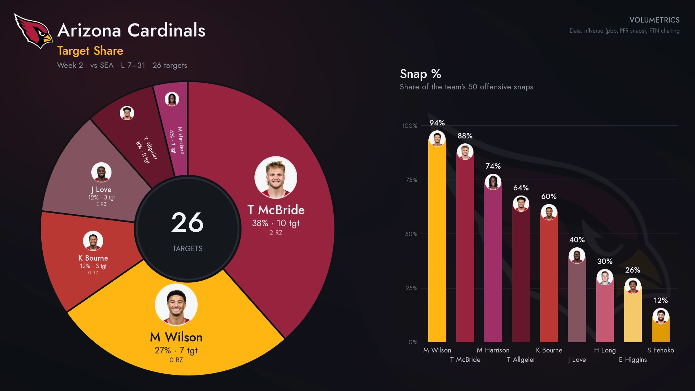
This passing game runs through T McBride: 10 targets, 38% of the share. T McBride also got both of the team's red-zone targets, and that's where touchdowns come from.
Why this take
- T McBride: 38.5% target share (>= 28%)
- T McBride: 2 of 2 team red-zone targets
Atlanta Falcons

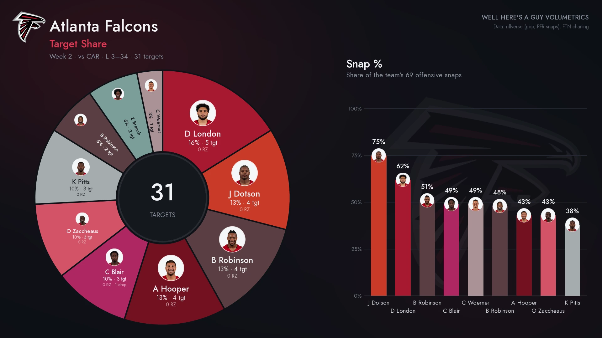
D London led the way with 5 targets (16%), with J Dotson next at 4 (13%). A lot of targets spread around this week: 4 guys hit double-digit share and nobody topped 16%.
Why this take
- top two by targets
- top share 16% (< 25%), 4 players >= 10%
Baltimore Ravens

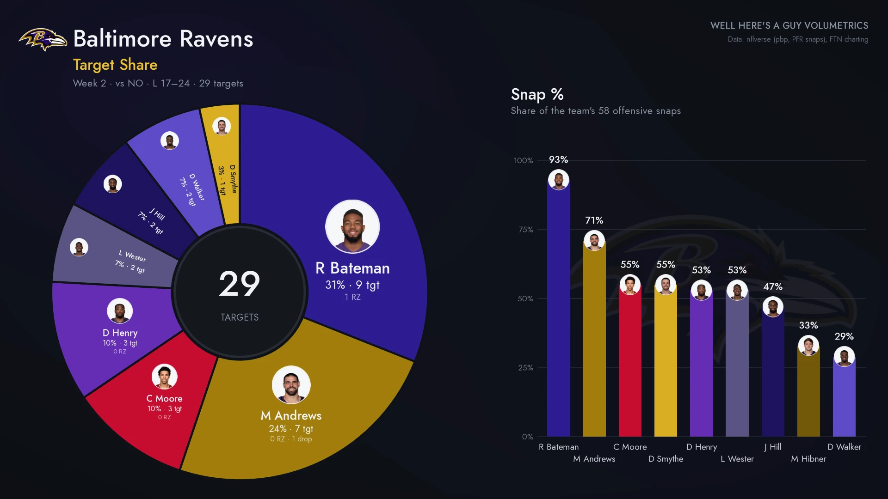
With Z Flowers not taking an offensive snap, R Bateman jumped to 31% of the targets after averaging 4%. If Z Flowers is out another week, R Bateman is a sneaky pickup. M Andrews commanded 24% of the targets at tight end, and that's a weekly-starter role at the position.
Why this take
- Z Flowers averaged 25% share before, 0 offensive snaps this week; R Bateman share 4% -> 31%, snaps 78% -> 93%
- M Andrews (TE): 24% target share
Buffalo Bills

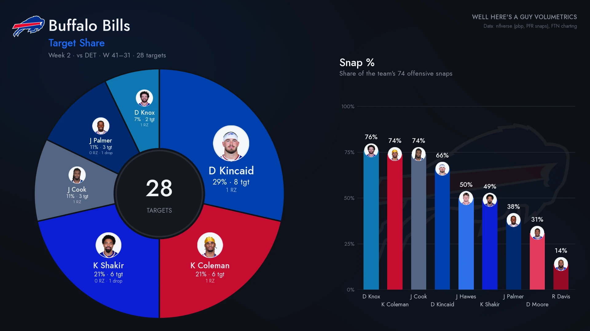
D Kincaid is the clear No. 1 here with 29% of the targets (8). Notice K Shakir earned 6 targets while only playing 49% of the snaps. That's a guy getting open when he's out there. No wide receiver played more than 74% of the snaps, so a rotation is capping everybody's ceiling.
Why this take
- D Kincaid: 28.6% target share (>= 28%)
- K Shakir: 21% target share on 49% snaps
- max WR snap share 74% (< 75%)
Carolina Panthers

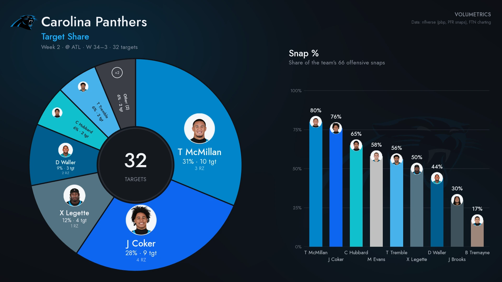
Look at how tight T McMillan and J Coker are: 10 targets to 9. And J Coker had the bigger red-zone role (4 RZ to 3).
Why this take
- T McMillan 31.2% vs J Coker 28.1% (gap <= 4%)
Chicago Bears

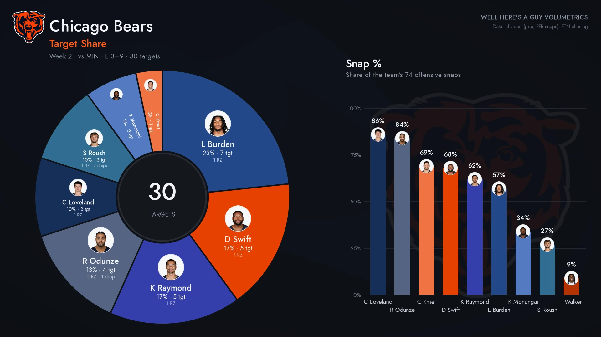
L Burden pulled 23% of the targets on just 57% of the snaps. If that snap share climbs, he's a sneaky add. No one dominated here. 6 different players got 10%+ of the looks, which is fine for the offense and tough for fantasy. D Swift had 5 targets out of the backfield (17%). That's real PPR value.
Why this take
- L Burden: 23% target share on 57% snaps
- top share 23% (< 25%), 6 players >= 10%
- D Swift (RB): 17% target share
Cincinnati Bengals

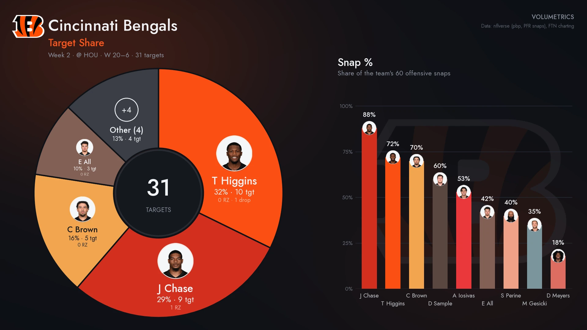
T Higgins (32%) and J Chase (29%) are a lot closer than most people think. J Chase actually played more snaps (88% to 72%). C Brown had 5 targets out of the backfield (16%). That's real PPR value.
Why this take
- T Higgins 32.3% vs J Chase 29.0% (gap <= 4%)
- C Brown (RB): 16% target share
Cleveland Browns

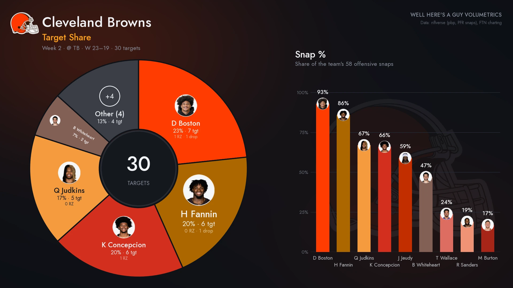
Look at how tight D Boston and H Fannin are: 7 targets to 6. A lot of targets spread around this week: 4 guys hit double-digit share and nobody topped 23%. Q Judkins had 5 targets out of the backfield (17%). That's real PPR value.
Why this take
- D Boston 23.3% vs H Fannin 20.0% (gap <= 4%)
- top share 23% (< 25%), 4 players >= 10%
- Q Judkins (RB): 17% target share
Dallas Cowboys

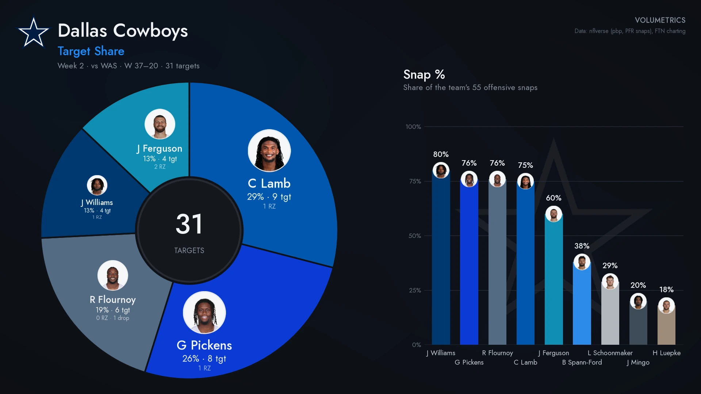
Look at how tight C Lamb and G Pickens are: 9 targets to 8. J Ferguson got 2 of the team's 5 red-zone targets, and that's where touchdowns come from.
Why this take
- C Lamb 29.0% vs G Pickens 25.8% (gap <= 4%)
- J Ferguson: 2 of 5 team red-zone targets
Denver Broncos

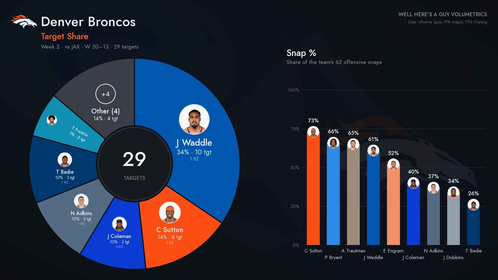
J Waddle is the clear No. 1 here with 34% of the targets (10). No wide receiver played more than 73% of the snaps, so a rotation is capping everybody's ceiling.
Why this take
- J Waddle: 34.5% target share (>= 28%)
- max WR snap share 73% (< 75%)
Detroit Lions

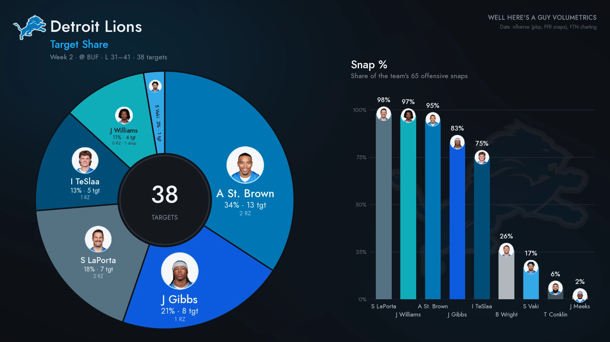
This passing game runs through A St. Brown: 13 targets, 34% of the share. J Gibbs had 8 targets out of the backfield (21%). That's real PPR value.
Why this take
- A St. Brown: 34.2% target share (>= 28%)
- J Gibbs (RB): 21% target share
Green Bay Packers

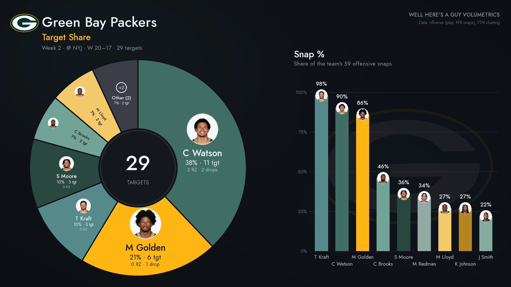
C Watson is the clear No. 1 here with 38% of the targets (11). C Watson also got 2 of the team's 3 red-zone targets, and that's where touchdowns come from.
Why this take
- C Watson: 37.9% target share (>= 28%)
- C Watson: 2 of 3 team red-zone targets
Houston Texans

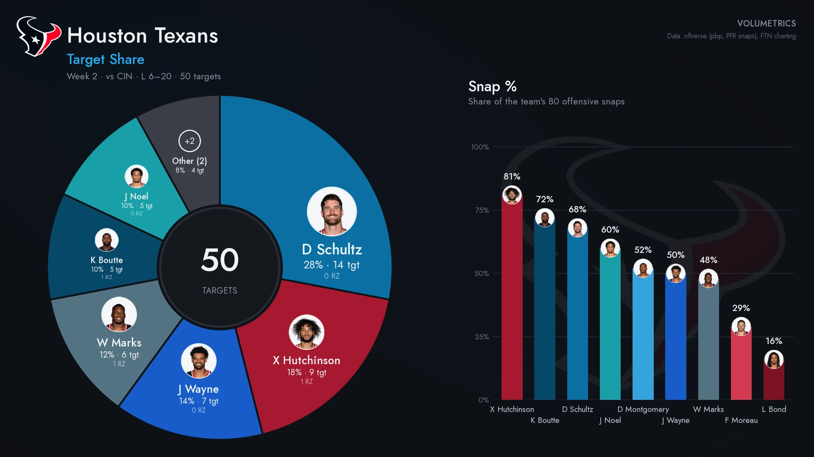
N Collins didn't play a snap, and J Wayne is the guy who soaked it up: 14% of the targets, up from 3%. Keep him in mind if N Collins misses more time. This passing game runs through D Schultz: 14 targets, 28% of the share. 50 targets total, so this team threw a ton. Don't expect every number here to repeat.
Why this take
- N Collins averaged 27% share before, 0 offensive snaps this week; J Wayne share 3% -> 14%, snaps 32% -> 50%
- D Schultz: 28.0% target share (>= 28%)
- 50 team targets (>= 45)
Indianapolis Colts

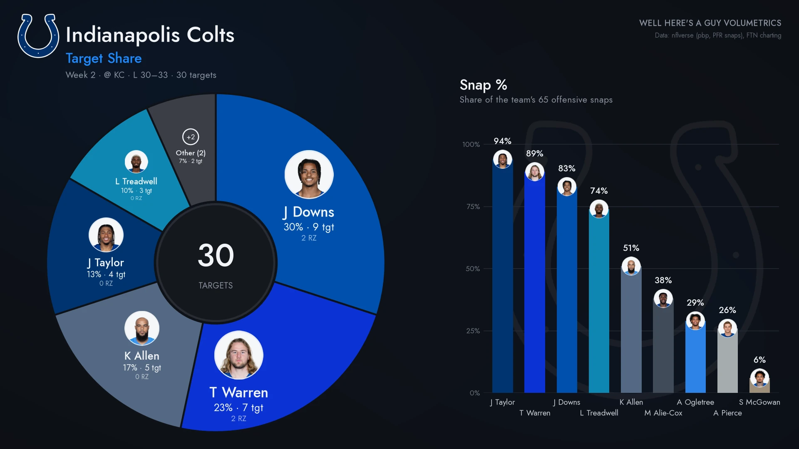
This passing game runs through J Downs: 9 targets, 30% of the share. J Downs also got 2 of the team's 4 red-zone targets, and that's where touchdowns come from. T Warren commanded 23% of the targets at tight end, and that's a weekly-starter role at the position.
Why this take
- J Downs: 30.0% target share (>= 28%)
- J Downs: 2 of 4 team red-zone targets
- T Warren (TE): 23% target share
Jacksonville Jaguars

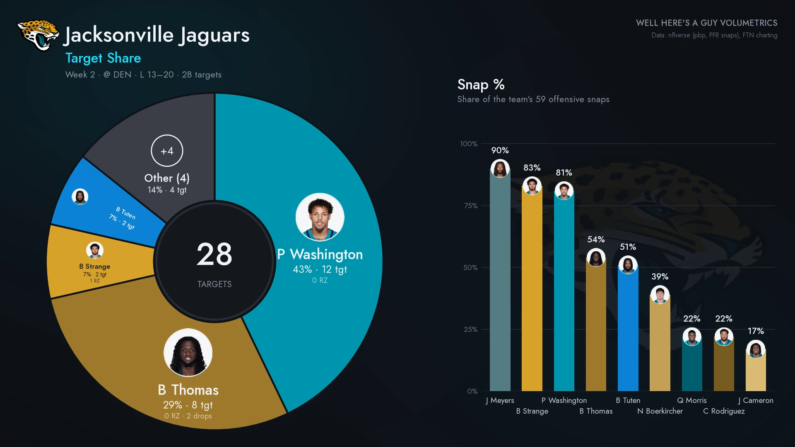
P Washington soaked up 43% of the targets (12 looks) but only got 7-98 out of it. That kind of volume doesn't stay quiet for long. B Thomas pulled 29% of the targets on just 54% of the snaps. If that snap share climbs, he's a sneaky add. Notice J Meyers actually played 90% of the snaps but only got 1 target. B Thomas did drop 2 balls, which is the kind of thing that costs you targets if it keeps up.
Why this take
- P Washington: 12/28 = 42.9% target share (>= 40%)
- B Thomas: 29% target share on 54% snaps
- J Meyers: 90% snaps but 1 targets (4%)
- B Thomas: 2 drops (FTN)
Kansas City Chiefs

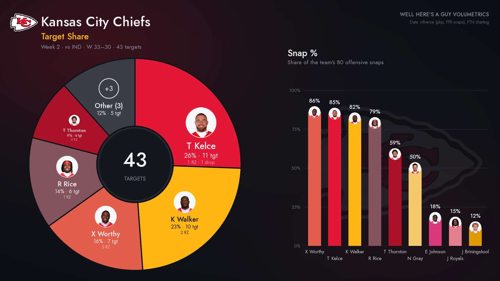
T Kelce (26%) and K Walker (23%) are a lot closer than most people think. And K Walker had the bigger red-zone role (2 RZ to 1).
Why this take
- T Kelce 25.6% vs K Walker 23.3% (gap <= 4%)
Las Vegas Raiders

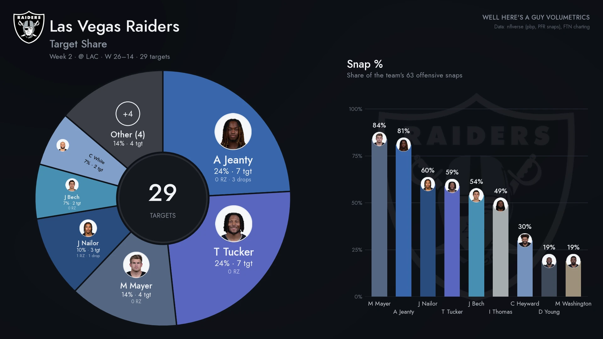
Look at how tight A Jeanty and T Tucker are: 7 targets to 7. This passing offense is a mess: no receiver cleared 75% of the snaps and nobody got a real share of the targets (top guy was 24%). Hard to trust anyone here until something changes. C White got 2 of the team's 3 red-zone targets, and that's where touchdowns come from. A Jeanty did drop 3 balls, which is the kind of thing that costs you targets if it keeps up.
Why this take
- A Jeanty 24.1% vs T Tucker 24.1% (gap <= 4%)
- top share 24% (< 25%), 4 players >= 10%, max WR snaps 60%
- C White: 2 of 3 team red-zone targets
- A Jeanty: 3 drops (FTN)
Los Angeles Chargers

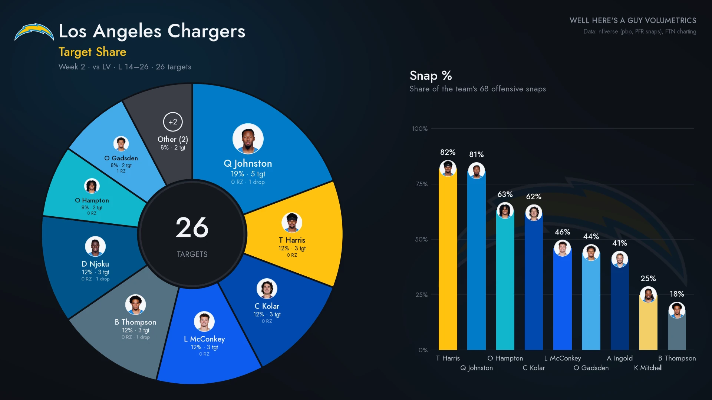
Q Johnston led the way with 5 targets (19%), with T Harris next at 3 (12%). A lot of targets spread around this week: 6 guys hit double-digit share and nobody topped 19%.
Why this take
- top two by targets
- top share 19% (< 25%), 6 players >= 10%
Los Angeles Rams

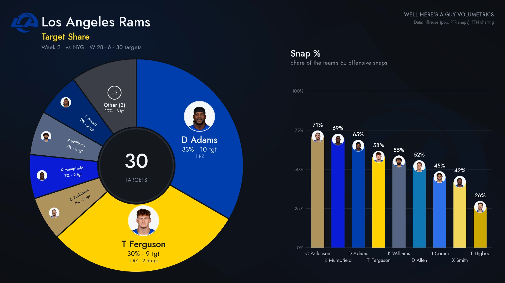
With P Nacua not taking an offensive snap, T Ferguson jumped to 30% of the targets after averaging 4%. If P Nacua is out another week, T Ferguson is a sneaky pickup. No wide receiver played more than 69% of the snaps, so a rotation is capping everybody's ceiling. T Ferguson did drop 2 balls, which is the kind of thing that costs you targets if it keeps up.
Why this take
- P Nacua averaged 33% share before, 0 offensive snaps this week; T Ferguson share 4% -> 30%, snaps 51% -> 58%
- max WR snap share 69% (< 75%)
- T Ferguson: 2 drops (FTN)
Miami Dolphins

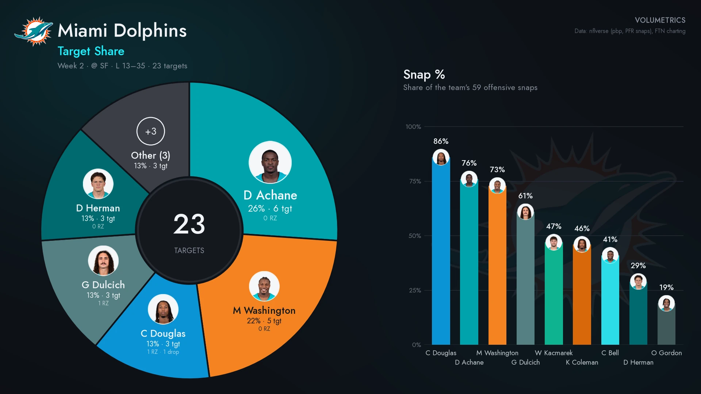
D Achane had 6 targets out of the backfield (26%). That's real PPR value.
Why this take
- D Achane (RB): 26% target share
Minnesota Vikings

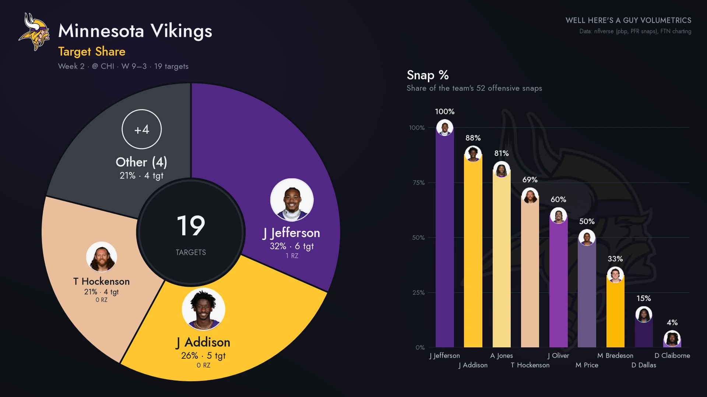
This passing game runs through J Jefferson: 6 targets, 32% of the share. T Hockenson commanded 21% of the targets at tight end, and that's a weekly-starter role at the position. Only 19 targets to go around, so even a big share doesn't buy much.
Why this take
- J Jefferson: 31.6% target share (>= 28%)
- T Hockenson (TE): 21% target share
- 19 team targets (<= 22)
New England Patriots

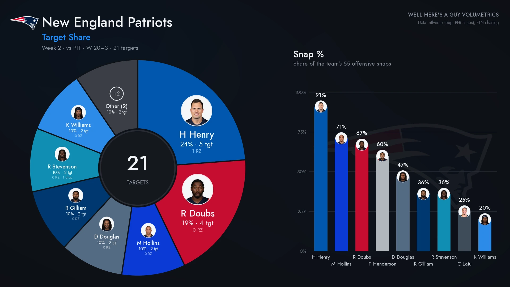
No wide receiver played more than 71% of the snaps, so a rotation is capping everybody's ceiling. H Henry commanded 24% of the targets at tight end, and that's a weekly-starter role at the position. Only 21 targets to go around, so even a big share doesn't buy much.
Why this take
- max WR snap share 71% (< 75%)
- H Henry (TE): 24% target share
- 21 team targets (<= 22)
New Orleans Saints

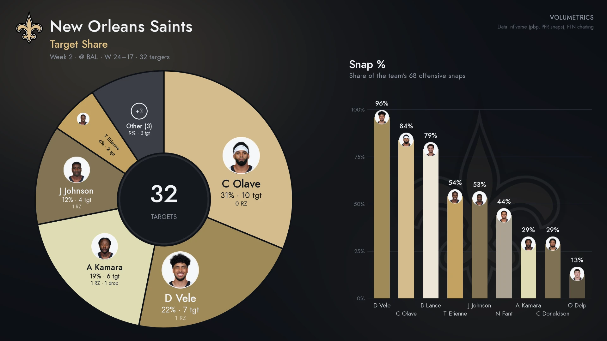
C Olave is the clear No. 1 here with 31% of the targets (10). A Kamara pulled 19% of the targets on just 29% of the snaps. If that snap share climbs, he's a sneaky add.
Why this take
- C Olave: 31.2% target share (>= 28%)
- A Kamara: 19% target share on 29% snaps
New York Giants

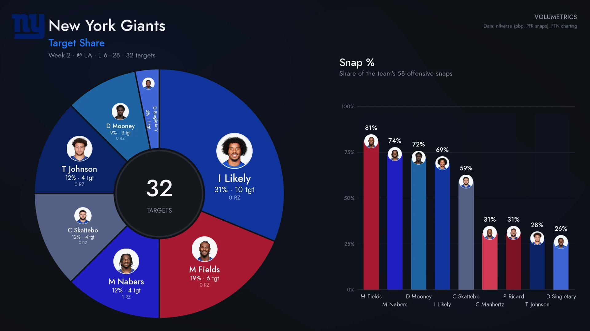
I Likely is the clear No. 1 here with 31% of the targets (10).
Why this take
- I Likely: 31.2% target share (>= 28%)
New York Jets

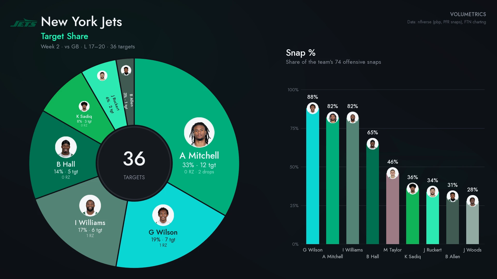
A Mitchell is the clear No. 1 here with 33% of the targets (12). A Mitchell did drop 2 balls, which is the kind of thing that costs you targets if it keeps up.
Why this take
- A Mitchell: 33.3% target share (>= 28%)
- A Mitchell: 2 drops (FTN)
Philadelphia Eagles

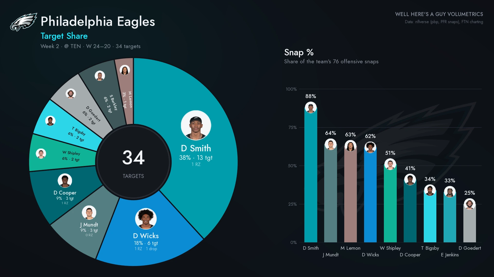
This passing game runs through D Smith: 13 targets, 38% of the share.
Why this take
- D Smith: 38.2% target share (>= 28%)
Pittsburgh Steelers

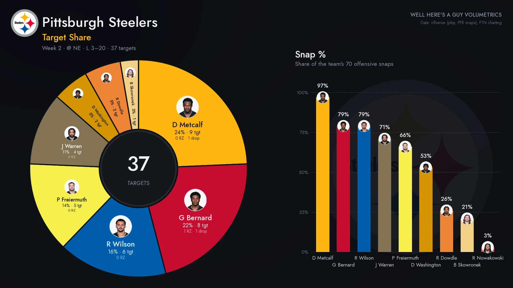
D Metcalf (24%) and G Bernard (22%) are a lot closer than most people think. And G Bernard had the bigger red-zone role (1 RZ to 0). A lot of targets spread around this week: 5 guys hit double-digit share and nobody topped 24%.
Why this take
- D Metcalf 24.3% vs G Bernard 21.6% (gap <= 4%)
- top share 24% (< 25%), 5 players >= 10%
San Francisco 49ers

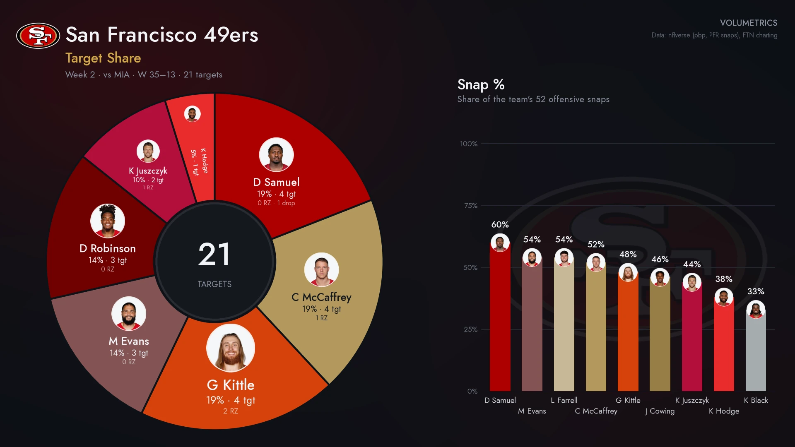
D Samuel (19%) and C McCaffrey (19%) are a lot closer than most people think. And C McCaffrey had the bigger red-zone role (1 RZ to 0). This passing offense is a mess: no receiver cleared 75% of the snaps and nobody got a real share of the targets (top guy was 19%). Hard to trust anyone here until something changes. G Kittle pulled 19% of the targets on just 48% of the snaps. If that snap share climbs, he's a sneaky add. G Kittle also got 2 of the team's 4 red-zone targets, and that's where touchdowns come from.
Why this take
- D Samuel 19.0% vs C McCaffrey 19.0% (gap <= 4%)
- top share 19% (< 25%), 5 players >= 10%, max WR snaps 60%
- G Kittle: 19% target share on 48% snaps
- G Kittle: 2 of 4 team red-zone targets
Seattle Seahawks

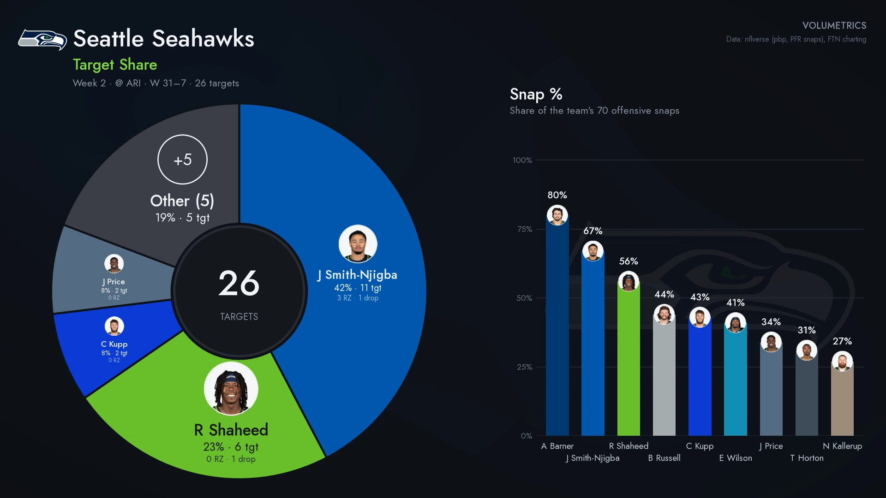
11 targets for J Smith-Njigba. That's 42% of the pie, and it went for 9-155, 3 TDs. Any time a guy gets over 40% of the looks, you expect a big day, and he delivered. Notice R Shaheed earned 6 targets while only playing 56% of the snaps. That's a guy getting open when he's out there. J Smith-Njigba also got 3 of the team's 6 red-zone targets, and that's where touchdowns come from. A Barner was on the field for 80% of the snaps and saw just 1 look. The routes are there; the targets aren't.
Why this take
- J Smith-Njigba: 11/26 = 42.3% target share (>= 40%)
- R Shaheed: 23% target share on 56% snaps
- J Smith-Njigba: 3 of 6 team red-zone targets
- A Barner: 80% snaps but 1 targets (4%)
Tampa Bay Buccaneers

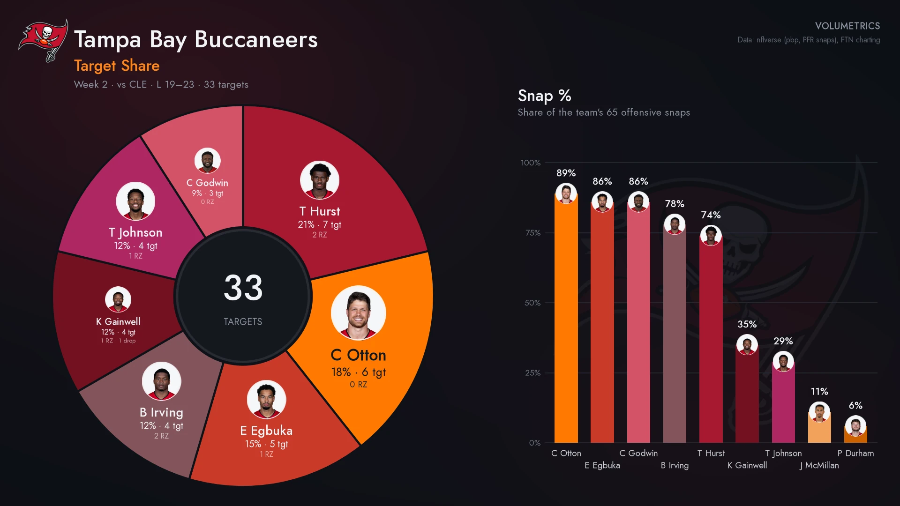
T Hurst led the way with 7 targets (21%), with C Otton next at 6 (18%). No one dominated here. 6 different players got 10%+ of the looks, which is fine for the offense and tough for fantasy.
Why this take
- top two by targets
- top share 21% (< 25%), 6 players >= 10%
Tennessee Titans

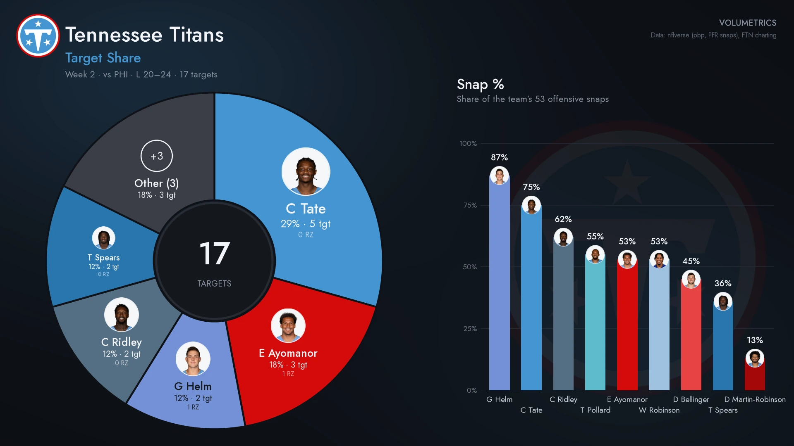
C Tate is the clear No. 1 here with 29% of the targets (5). Only 17 targets to go around, so even a big share doesn't buy much.
Why this take
- C Tate: 29.4% target share (>= 28%)
- 17 team targets (<= 22)
Washington Commanders

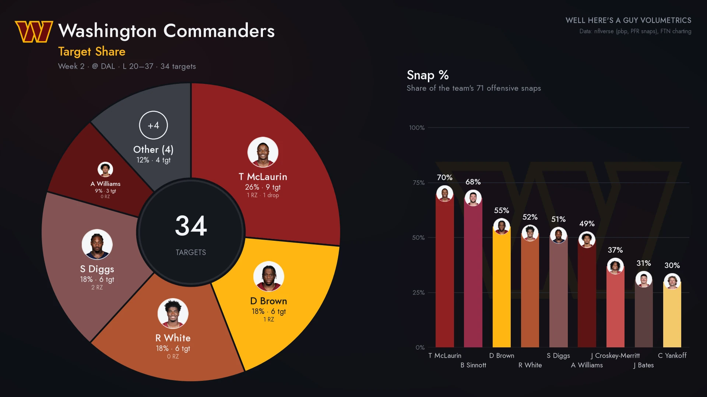
Notice D Brown earned 6 targets while only playing 55% of the snaps. That's a guy getting open when he's out there. S Diggs got 2 of the team's 4 red-zone targets, and that's where touchdowns come from. No wide receiver played more than 70% of the snaps, so a rotation is capping everybody's ceiling.
Why this take
- D Brown: 18% target share on 55% snaps
- S Diggs: 2 of 4 team red-zone targets
- max WR snap share 70% (< 75%)
Week 2 backfields
| Top 8 rushers | ||||||
|---|---|---|---|---|---|---|
| 24 | 117 | 89% | 82% | 9 | 36.3 | |
| 24 | 92 | 80% | 94% | 6 | 21.0 | |
| 23 | 94 | 74% | 63% | 3 | 18.2 | |
| 23 | 105 | 85% | 81% | 0 | 10.2 | |
| 21 | 48 | 84% | 81% | 8 | 29.2 | |
| 21 | 92 | 52% | 41% | 5 | 21.6 | |
| 21 | 135 | 75% | 74% | 4 | 21.6 | |
| 20 | 74 | 71% | 76% | 6 | 20.1 |
Tap a back to jump to his team, or a column to re-sort. HVT = catches plus carries inside the 10. xFP = the PPR points an average back would score on that workload.
League view

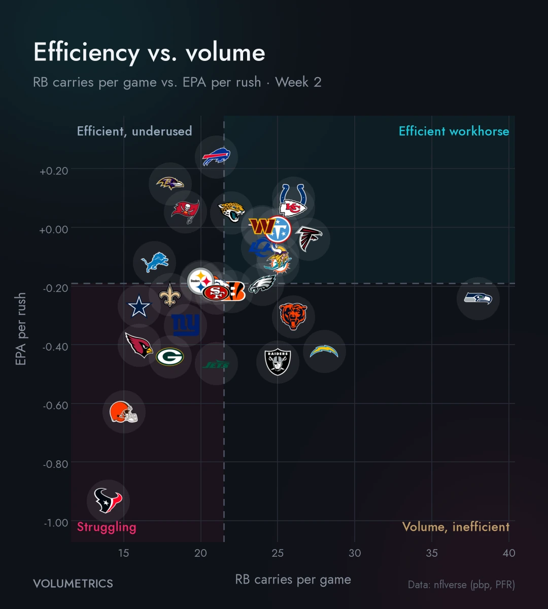

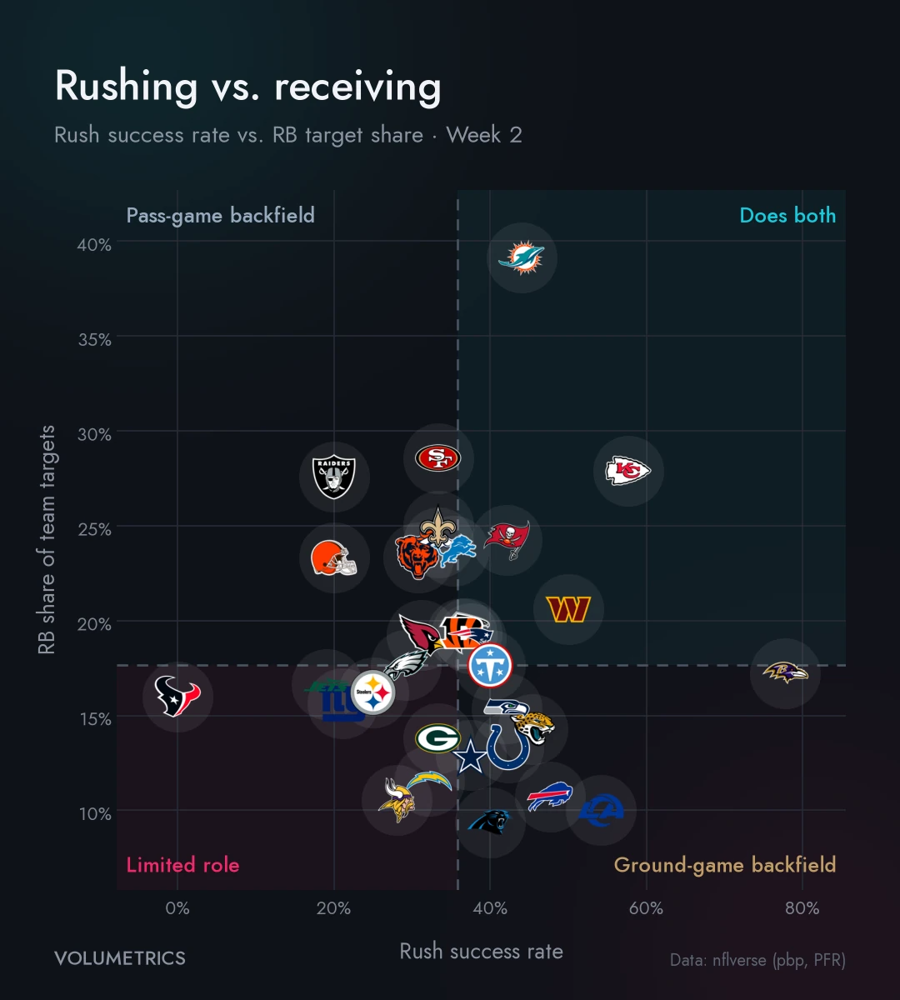

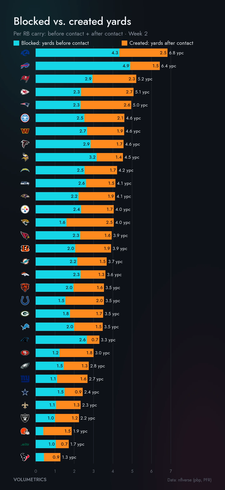

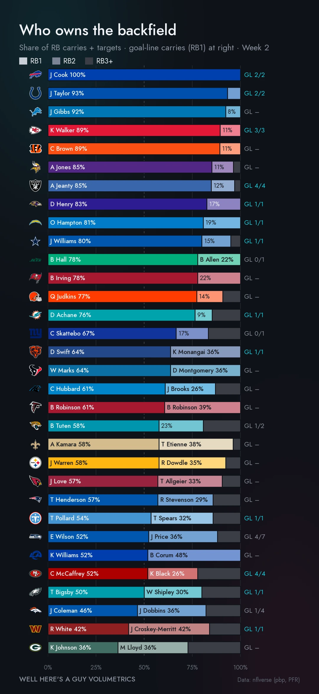
Team by team
Arizona Cardinals

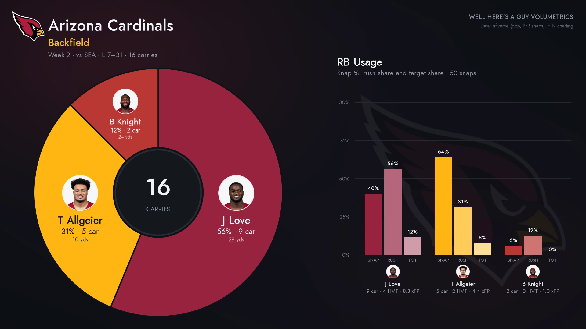
This is a committee: J Love 56% of the carries, T Allgeier 31%. J Love has the passing-down edge with 3 targets to 2. Hard to trust either as more than a flex.
Why this take
- J Love 56% / T Allgeier 31% of carries
Atlanta Falcons

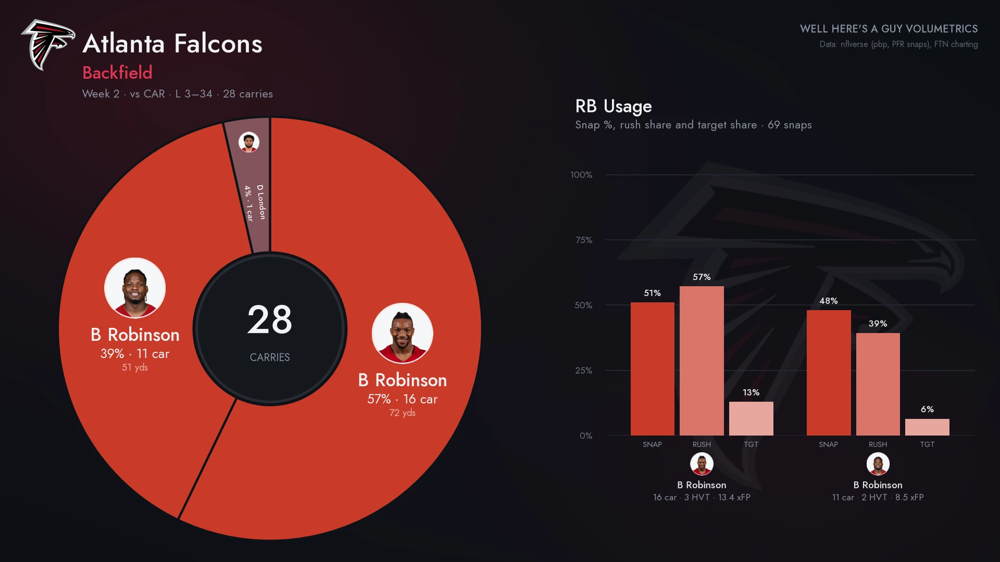
This is a committee: B Robinson 57% of the carries, B Robinson 39%. B Robinson has the passing-down edge with 4 targets to 2. Hard to trust either as more than a flex.
Why this take
- B Robinson 57% / B Robinson 39% of carries
Baltimore Ravens

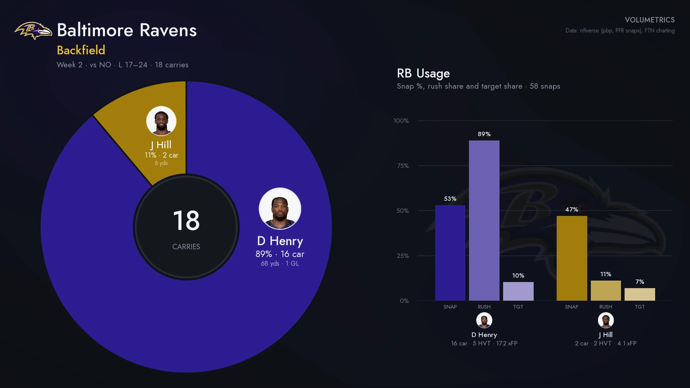
D Henry is the lead back (16 carries, 89%) but not a workhorse: he played 53% of the snaps.
Why this take
- D Henry: 89% rush share, 53% snaps
Buffalo Bills

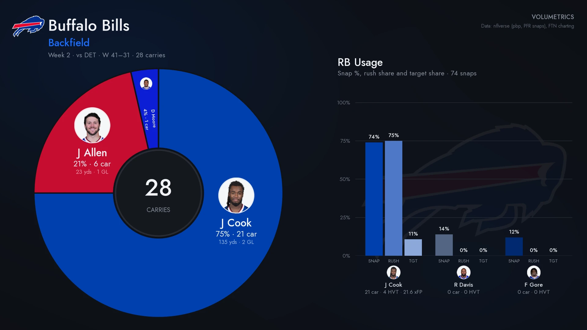
No committee here. J Cook played 74% of the snaps and took 21 of 28 carries. J Cook also got 2 of the team's 3 carries inside the 5. That's the touchdown role.
Why this take
- J Cook: 74% snaps, 75% rush share
- J Cook: 2 of 3 carries inside the 5
Carolina Panthers

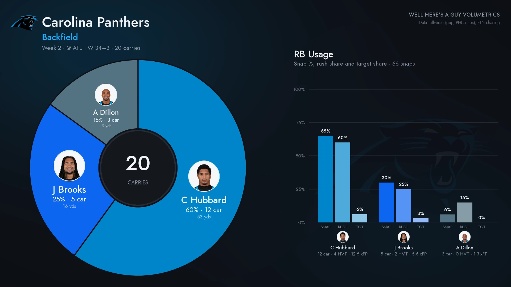
C Hubbard is the lead back (12 carries, 60%) but not a workhorse: he played 65% of the snaps and J Brooks still got 5 carries.
Why this take
- C Hubbard: 60% rush share, 65% snaps
Chicago Bears

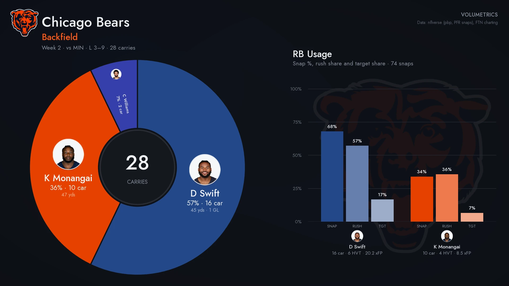
This is a committee: D Swift 57% of the carries, K Monangai 36%. D Swift has the passing-down edge with 5 targets to 2. Hard to trust either as more than a flex. D Swift had 6 high-value touches (catches plus carries inside the 10). Those are the touches that score fantasy points.
Why this take
- D Swift 57% / K Monangai 36% of carries
- D Swift: 6 high-value touches
Cincinnati Bengals

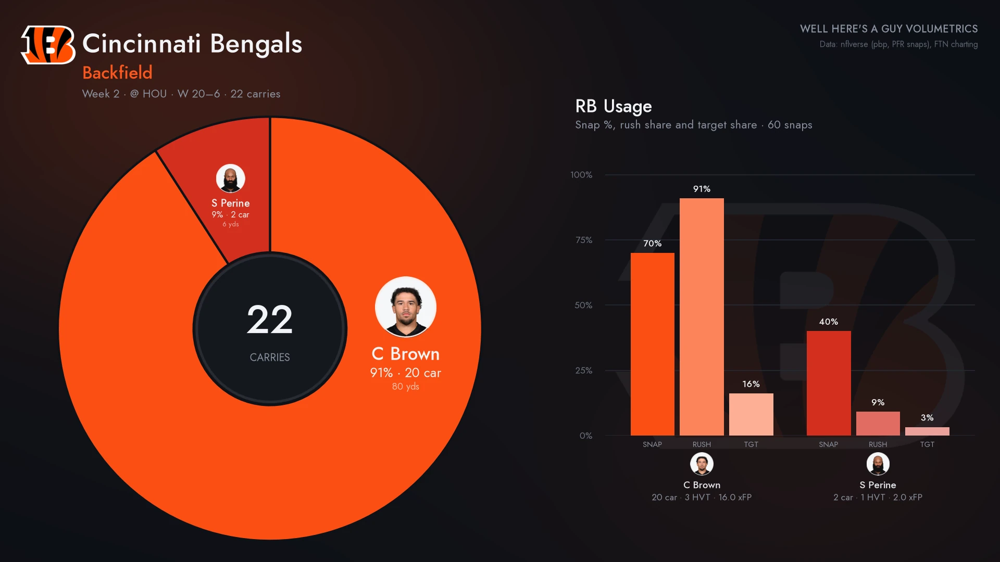
No committee here. C Brown played 70% of the snaps and took 20 of 22 carries.
Why this take
- C Brown: 70% snaps, 91% rush share
Cleveland Browns

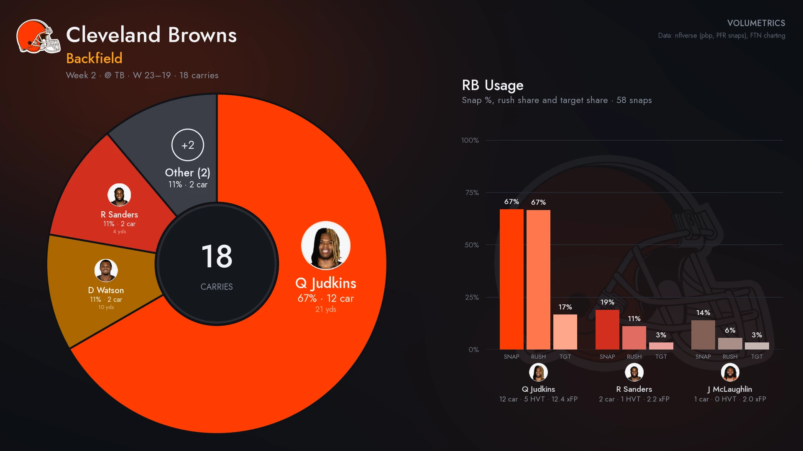
Q Judkins is the lead back (12 carries, 67%) but not a workhorse: he played 67% of the snaps.
Why this take
- Q Judkins: 67% rush share, 67% snaps
Dallas Cowboys

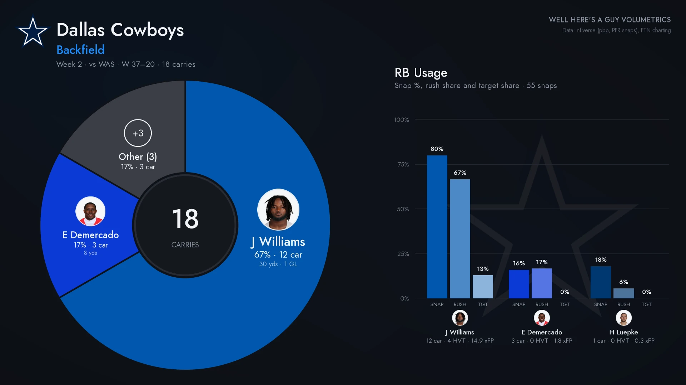
No committee here. J Williams played 80% of the snaps and took 12 of 18 carries.
Why this take
- J Williams: 80% snaps, 67% rush share
Denver Broncos

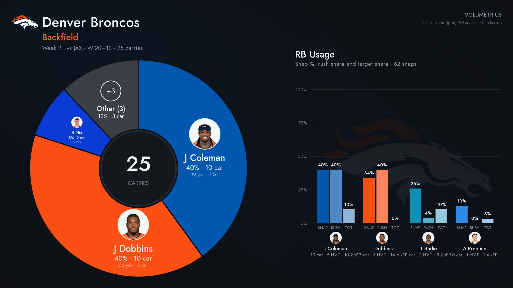
This is a committee: J Coleman 40% of the carries, J Dobbins 40%. J Coleman has the passing-down edge with 3 targets to 0. Hard to trust either as more than a flex. J Dobbins also got 3 of the team's 4 carries inside the 5. That's the touchdown role.
Why this take
- J Coleman 40% / J Dobbins 40% of carries
- J Dobbins: 3 of 4 carries inside the 5
Detroit Lions

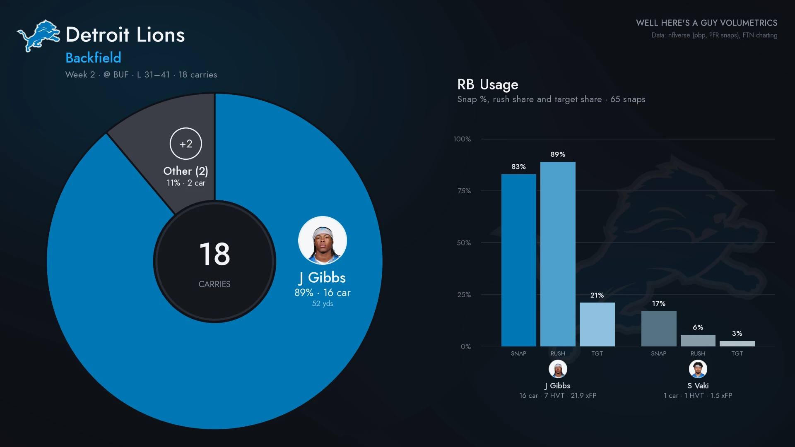
No committee here. J Gibbs played 83% of the snaps and took 16 of 18 carries. J Gibbs had 7 high-value touches (catches plus carries inside the 10). Those are the touches that score fantasy points.
Why this take
- J Gibbs: 83% snaps, 89% rush share
- J Gibbs: 7 high-value touches
Green Bay Packers

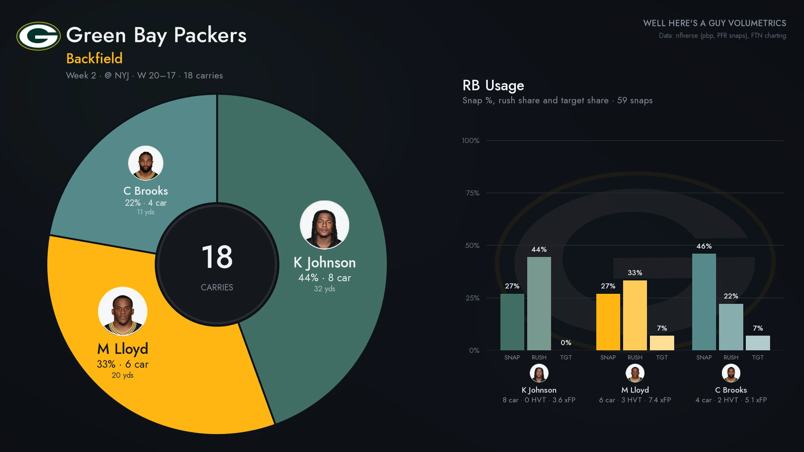
This is a committee: K Johnson 44% of the carries, M Lloyd 33%. M Lloyd has the passing-down edge with 2 targets to 0. Hard to trust either as more than a flex.
Why this take
- K Johnson 44% / M Lloyd 33% of carries
Houston Texans

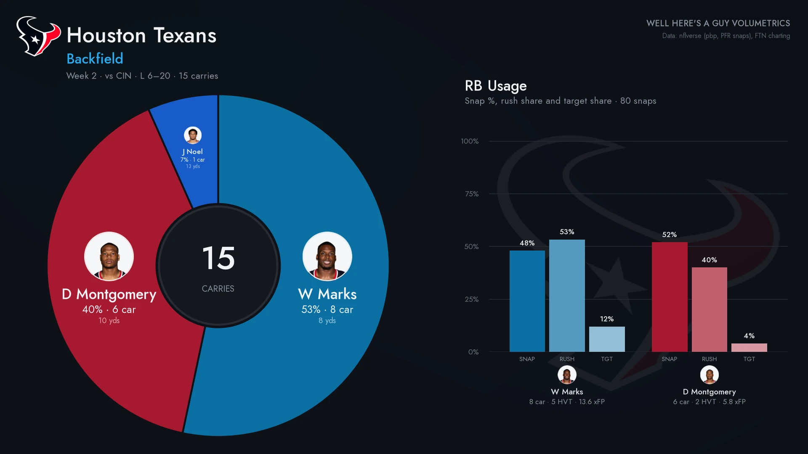
This is a committee: W Marks 53% of the carries, D Montgomery 40%. W Marks has the passing-down edge with 6 targets to 2. Hard to trust either as more than a flex.
Why this take
- W Marks 53% / D Montgomery 40% of carries
Indianapolis Colts

No committee here. J Taylor played 94% of the snaps and took 24 of 30 carries. J Taylor also got both of the team's carries inside the 5. That's the touchdown role.
Why this take
- J Taylor: 94% snaps, 80% rush share
- J Taylor: 2 of 2 carries inside the 5
Jacksonville Jaguars

B Tuten is the lead back (13 carries, 54%) but not a workhorse: he played 51% of the snaps and C Rodriguez still got 6 carries.
Why this take
- B Tuten: 54% rush share, 51% snaps
Kansas City Chiefs

K Walker is a true workhorse: 82% of the snaps and 89% of the carries (24). K Walker also got all 3 of the team's carries inside the 5. That's the touchdown role.
Why this take
- K Walker: 82% snaps, 89% rush share
- K Walker: 3 of 3 carries inside the 5
Las Vegas Raiders

A Jeanty is a true workhorse: 81% of the snaps and 84% of the carries (21). A Jeanty also got all 4 of the team's carries inside the 5. That's the touchdown role.
Why this take
- A Jeanty: 81% snaps, 84% rush share
- A Jeanty: 4 of 4 carries inside the 5
Los Angeles Chargers

O Hampton is the lead back (23 carries, 74%) but not a workhorse: he played 63% of the snaps and K Mitchell still got 5 carries.
Why this take
- O Hampton: 74% rush share, 63% snaps
Los Angeles Rams

This is a committee: K Williams 50% of the carries, B Corum 50%. K Williams has the passing-down edge with 2 targets to 1. Hard to trust either as more than a flex.
Why this take
- K Williams 50% / B Corum 50% of carries
Miami Dolphins

No committee here. D Achane played 76% of the snaps and took 20 of 28 carries. D Herman is the passing-down back: 3 targets (13% of the team's) on 29% of the snaps. That's real value in PPR. D Achane had 6 high-value touches (catches plus carries inside the 10). Those are the touches that score fantasy points.
Why this take
- D Achane: 76% snaps, 71% rush share
- D Herman: 13% target share, 0% rush share
- D Achane: 6 high-value touches
Minnesota Vikings

No committee here. A Jones played 81% of the snaps and took 23 of 27 carries.
Why this take
- A Jones: 81% snaps, 85% rush share
New England Patriots

T Henderson is the lead back (16 carries, 67%) but not a workhorse: he played 60% of the snaps and R Stevenson still got 6 carries.
Why this take
- T Henderson: 67% rush share, 60% snaps
New Orleans Saints

This is a committee: A Kamara 38% of the carries, T Etienne 33%. A Kamara has the passing-down edge with 6 targets to 2. Hard to trust either as more than a flex.
Why this take
- A Kamara 38% / T Etienne 33% of carries
New York Giants

C Skattebo is the lead back (12 carries, 57%) but not a workhorse: he played 59% of the snaps and N Harris still got 4 carries.
Why this take
- C Skattebo: 57% rush share, 59% snaps
New York Jets

B Hall is the lead back (16 carries, 70%) but not a workhorse: he played 65% of the snaps and B Allen still got 5 carries.
Why this take
- B Hall: 70% rush share, 65% snaps
Philadelphia Eagles

T Bigsby led the backfield with 13 carries (43%), with W Shipley next at 7 (23%).
Why this take
- top two by carries
Pittsburgh Steelers

This is a committee: J Warren 52% of the carries, R Dowdle 33%. J Warren has the passing-down edge with 4 targets to 2. Hard to trust either as more than a flex.
Why this take
- J Warren 52% / R Dowdle 33% of carries
San Francisco 49ers

This is a committee: C McCaffrey 45% of the carries, K Black 32%. C McCaffrey has the passing-down edge with 4 targets to 0. Hard to trust either as more than a flex. C McCaffrey also got all 4 of the team's carries inside the 5. That's the touchdown role.
Why this take
- C McCaffrey 45% / K Black 32% of carries
- C McCaffrey: 4 of 4 carries inside the 5
Seattle Seahawks

This is a committee: E Wilson 52% of the carries, J Price 32%. J Price has the passing-down edge with 2 targets to 1. Hard to trust either as more than a flex. E Wilson also got 4 of the team's 8 carries inside the 5. That's the touchdown role.
Why this take
- E Wilson 52% / J Price 32% of carries
- E Wilson: 4 of 8 carries inside the 5
Tampa Bay Buccaneers

B Irving is a true workhorse: 78% of the snaps and 77% of the carries (17). K Gainwell is the passing-down back: 4 targets (12% of the team's) on 35% of the snaps. That's real value in PPR.
Why this take
- B Irving: 78% snaps, 77% rush share
- K Gainwell: 12% target share, 9% rush share
Tennessee Titans

T Pollard is the lead back (14 carries, 52%) but not a workhorse: he played 55% of the snaps and T Spears still got 7 carries.
Why this take
- T Pollard: 52% rush share, 55% snaps
Washington Commanders

J Croskey-Merritt led the backfield with 12 carries (48%), with R White next at 7 (28%). R White is the passing-down back: 6 targets (18% of the team's) on 52% of the snaps. That's real value in PPR. R White had 8 high-value touches (catches plus carries inside the 10). Those are the touches that score fantasy points.
Why this take
- top two by carries
- R White: 18% target share, 28% rush share
- R White: 8 high-value touches
Trends: each team's last 2 games
Top target shares, last 2 games
| J Smith-Njigba | 44% | |
| T McBride | 37% | |
| A St. Brown | 35% | |
| C Olave | 27% | |
| D Schultz | 25% |
Arizona Cardinals

| Target share | Wk 1 | Wk 2 | All |
|---|---|---|---|
| T McBride | 35% | 38% | 37% |
| M Wilson | 19% | 27% | 22% |
| K Bourne | 22% | 12% | 17% |
| J Love | 11% | 12% | 11% |
| M Harrison | 8% | 4% | 6% |
T McBride owns this offense: 37% of the targets over the last 2 games, and he hasn't dipped below 35% in any of them. That's as safe as it gets. T McBride also has 6 of the team's 9 red-zone targets over the last 2. That's the touchdown role. Over the last 2 games, T McBride and M Wilson have soaked up 59% of the targets. Nobody else here matters much for fantasy.
Why this take
- T McBride: 36.5% share over 2 games, never below 35%
- T McBride: 6 of 9 team RZ targets over 2
- T McBride + M Wilson = 58.7% of targets over 2
Atlanta Falcons

| Target share | Wk 1 | Wk 2 | All |
|---|---|---|---|
| B Robinson | 53% | 13% | 28% |
| D London | 21% | 16% | 18% |
| J Dotson | 16% | 13% | 14% |
| K Pitts | 5% | 10% | 8% |
| O Zaccheaus | 5% | 10% | 8% |
B Robinson leads this team at 28% of the targets over the last 2, but it's swung anywhere from 13% to 53% week to week. Expect some boom and some bust. Only about 25 targets a game over the last 2, which caps everyone's ceiling.
Why this take
- B Robinson: 28.0% share over 2; weekly range 13%-53%
- 25.0 team targets per game over 2
Baltimore Ravens

| Target share | Wk 1 | Wk 2 | All |
|---|---|---|---|
| M Andrews | 25% | 24% | 25% |
| R Bateman | 4% | 31% | 19% |
| Z Flowers | 25% | – | 11% |
| C Moore | 8% | 10% | 9% |
| D Henry | 4% | 10% | 8% |
M Andrews led the way with 13 targets (25%) over the last 2 games, with R Bateman next at 10 (19%).
Why this take
- top two by targets
Buffalo Bills

| Target share | Wk 1 | Wk 2 | All |
|---|---|---|---|
| D Kincaid | 21% | 29% | 25% |
| K Shakir | 21% | 21% | 21% |
| D Moore | 29% | 0% | 14% |
| J Cook | 14% | 11% | 12% |
| K Coleman | 4% | 21% | 12% |
D Kincaid is the clear No. 1 over the last 2 games: 14 targets, 25% of the share.
Why this take
- D Kincaid: 25.0% share over 2 games
Carolina Panthers

| Target share | Wk 1 | Wk 2 | All |
|---|---|---|---|
| T McMillan | 24% | 31% | 27% |
| J Coker | 26% | 28% | 27% |
| T Tremble | 15% | 6% | 11% |
| X Legette | 6% | 12% | 9% |
| C Hubbard | 9% | 6% | 8% |
T McMillan owns this offense: 27% of the targets over the last 2 games, and he hasn't dipped below 24% in any of them. That's as safe as it gets.
Why this take
- T McMillan: 27.3% share over 2 games, never below 24%
Chicago Bears

| Target share | Wk 1 | Wk 2 | All |
|---|---|---|---|
| K Raymond | 35% | 17% | 25% |
| L Burden | 19% | 23% | 21% |
| R Odunze | 12% | 13% | 12% |
| D Swift | 4% | 17% | 11% |
| C Loveland | 8% | 10% | 9% |
K Raymond leads this team at 25% of the targets over the last 2, but it's swung anywhere from 17% to 35% week to week. Expect some boom and some bust. C Loveland has been on the field for 87% of the snaps over the last 2 games but is only drawing 9% of the targets.
Why this take
- K Raymond: 25.0% share over 2; weekly range 17%-35%
- C Loveland: 87% snaps, 9% share over 2
Cincinnati Bengals

| Target share | Wk 1 | Wk 2 | All |
|---|---|---|---|
| T Higgins | 18% | 32% | 25% |
| J Chase | 12% | 29% | 20% |
| C Brown | 18% | 16% | 17% |
| M Gesicki | 21% | 0% | 11% |
| A Iosivas | 9% | 3% | 6% |
T Higgins led the way with 16 targets (25%) over the last 2 games, with J Chase next at 13 (20%). C Brown has 11 targets out of the backfield over the last 2. Steady PPR value.
Why this take
- top two by targets
- C Brown (RB): 17% share over 2
Cleveland Browns

| Target share | Wk 1 | Wk 2 | All |
|---|---|---|---|
| D Boston | 18% | 23% | 21% |
| K Concepcion | 23% | 20% | 21% |
| H Fannin | 14% | 20% | 17% |
| Q Judkins | 9% | 17% | 13% |
| J Jeudy | 18% | 3% | 10% |
D Boston (21%) and K Concepcion (21%) are basically splitting the top role over the last 2 games. Nobody has more than 21% of the targets over the last 2 games. This target tree is flat, so it's hard to trust anyone week to week. Q Judkins has 7 targets out of the backfield over the last 2. Steady PPR value.
Why this take
- D Boston 21.2% vs K Concepcion 21.2% over 2
- top share over 2 games 21%
- Q Judkins (RB): 13% share over 2
Dallas Cowboys

| Target share | Wk 1 | Wk 2 | All |
|---|---|---|---|
| C Lamb | 27% | 29% | 28% |
| G Pickens | 20% | 26% | 23% |
| R Flournoy | 13% | 19% | 16% |
| J Williams | 17% | 13% | 15% |
| J Ferguson | 7% | 13% | 10% |
C Lamb owns this offense: 28% of the targets over the last 2 games, and he hasn't dipped below 27% in any of them. That's as safe as it gets. J Williams has 9 targets out of the backfield over the last 2. Steady PPR value.
Why this take
- C Lamb: 27.9% share over 2 games, never below 27%
- J Williams (RB): 15% share over 2
Denver Broncos

| Target share | Wk 1 | Wk 2 | All |
|---|---|---|---|
| J Waddle | 11% | 34% | 23% |
| C Sutton | 19% | 14% | 16% |
| P Bryant | 22% | 3% | 12% |
| E Engram | 19% | 3% | 11% |
| R Harvey | 15% | – | 7% |
J Waddle led the way with 13 targets (23%) over the last 2 games, with C Sutton next at 9 (16%).
Why this take
- top two by targets
Detroit Lions

| Target share | Wk 1 | Wk 2 | All |
|---|---|---|---|
| A St. Brown | 36% | 34% | 35% |
| S LaPorta | 21% | 18% | 19% |
| J Williams | 23% | 11% | 17% |
| J Gibbs | 13% | 21% | 17% |
| I TeSlaa | 3% | 13% | 8% |
27 targets for A St. Brown over the last 2, 35% of the pie, and at least 34% every single week. I'm riding this. A St. Brown also has 6 of the team's 13 red-zone targets over the last 2. That's the touchdown role. J Gibbs has 13 targets out of the backfield over the last 2. Steady PPR value. S LaPorta is getting 19% of the looks at tight end over the last 2, and that's a weekly starter.
Why this take
- A St. Brown: 35.1% share over 2 games, never below 34%
- A St. Brown: 6 of 13 team RZ targets over 2
- J Gibbs (RB): 17% share over 2
- S LaPorta (TE): 19% share over 2
Green Bay Packers

| Target share | Wk 1 | Wk 2 | All |
|---|---|---|---|
| C Watson | 20% | 38% | 28% |
| M Golden | 30% | 21% | 26% |
| T Kraft | 15% | 10% | 13% |
| J Reed | 18% | 3% | 12% |
| S Moore | 2% | 10% | 6% |
19 targets for C Watson over the last 2, 28% of the pie, and at least 20% every single week. I'm riding this.
Why this take
- C Watson: 27.5% share over 2 games, never below 20%
Houston Texans

| Target share | Wk 1 | Wk 2 | All |
|---|---|---|---|
| D Schultz | 22% | 28% | 25% |
| X Hutchinson | 16% | 18% | 17% |
| N Collins | 27% | – | 11% |
| J Wayne | 3% | 14% | 9% |
| K Boutte | 5% | 10% | 8% |
D Schultz is the clear No. 1 over the last 2 games: 22 targets, 25% of the share. This team is throwing 44 times a game over the last 2, so there's plenty of volume to go around.
Why this take
- D Schultz: 25.3% share over 2 games
- 43.5 team targets per game over 2
Indianapolis Colts

| Target share | Wk 1 | Wk 2 | All |
|---|---|---|---|
| J Downs | 14% | 30% | 22% |
| T Warren | 17% | 23% | 20% |
| K Allen | 21% | 17% | 19% |
| J Taylor | 14% | 13% | 14% |
| A Pierce | 21% | 3% | 12% |
J Downs (22%) and T Warren (20%) are basically splitting the top role over the last 2 games. J Taylor has 8 targets out of the backfield over the last 2. Steady PPR value.
Why this take
- J Downs 22.0% vs T Warren 20.3% over 2
- J Taylor (RB): 14% share over 2
Jacksonville Jaguars

| Target share | Wk 1 | Wk 2 | All |
|---|---|---|---|
| P Washington | 29% | 43% | 37% |
| B Thomas | 14% | 29% | 22% |
| B Strange | 14% | 7% | 10% |
| J Meyers | 10% | 4% | 6% |
| B Tuten | 5% | 7% | 6% |
P Washington owns this offense: 37% of the targets over the last 2 games, and he hasn't dipped below 29% in any of them. That's as safe as it gets. Over the last 2 games, P Washington and B Thomas have soaked up 59% of the targets. Nobody else here matters much for fantasy. Only about 24 targets a game over the last 2, which caps everyone's ceiling.
Why this take
- P Washington: 36.7% share over 2 games, never below 29%
- P Washington + B Thomas = 59.2% of targets over 2
- 24.5 team targets per game over 2
Kansas City Chiefs

| Target share | Wk 1 | Wk 2 | All |
|---|---|---|---|
| T Kelce | 20% | 26% | 24% |
| K Walker | 24% | 23% | 24% |
| X Worthy | 24% | 16% | 19% |
| R Rice | 8% | 14% | 12% |
| T Thornton | 4% | 9% | 7% |
T Kelce (24%) and K Walker (24%) are basically splitting the top role over the last 2 games. X Worthy has 4 of the team's 11 red-zone targets over the last 2. That's the touchdown role.
Why this take
- T Kelce 23.5% vs K Walker 23.5% over 2
- X Worthy: 4 of 11 team RZ targets over 2
Las Vegas Raiders

| Target share | Wk 1 | Wk 2 | All |
|---|---|---|---|
| A Jeanty | 21% | 24% | 22% |
| M Mayer | 24% | 14% | 19% |
| T Tucker | 14% | 24% | 19% |
| J Nailor | 17% | 10% | 14% |
| J Bech | 14% | 7% | 10% |
A Jeanty has 4 of the team's 11 red-zone targets over the last 2. That's the touchdown role. M Mayer is getting 19% of the looks at tight end over the last 2, and that's a weekly starter.
Why this take
- A Jeanty: 4 of 11 team RZ targets over 2
- M Mayer (TE): 19% share over 2
Los Angeles Chargers

| Target share | Wk 1 | Wk 2 | All |
|---|---|---|---|
| Q Johnston | 22% | 19% | 21% |
| L McConkey | 26% | 12% | 19% |
| T Harris | 22% | 12% | 17% |
| D Njoku | 19% | 12% | 15% |
| O Gadsden | 7% | 8% | 8% |
Q Johnston led the way with 11 targets (21%) over the last 2 games, with L McConkey next at 10 (19%). Nobody has more than 21% of the targets over the last 2 games. This target tree is flat, so it's hard to trust anyone week to week.
Why this take
- top two by targets
- top share over 2 games 21%
Los Angeles Rams

| Target share | Wk 1 | Wk 2 | All |
|---|---|---|---|
| D Adams | 22% | 33% | 28% |
| T Ferguson | 4% | 30% | 18% |
| P Nacua | 33% | – | 16% |
| K Williams | 11% | 7% | 9% |
| C Parkinson | 7% | 7% | 7% |
16 targets for D Adams over the last 2, 28% of the pie, and at least 22% every single week. I'm riding this.
Why this take
- D Adams: 28.1% share over 2 games, never below 22%
Miami Dolphins

| Target share | Wk 1 | Wk 2 | All |
|---|---|---|---|
| M Washington | 30% | 22% | 26% |
| D Achane | 19% | 26% | 22% |
| C Douglas | 26% | 13% | 20% |
| G Dulcich | 7% | 13% | 10% |
| C Bell | 7% | 4% | 6% |
M Washington is the clear No. 1 over the last 2 games: 13 targets, 26% of the share. D Achane has 11 targets out of the backfield over the last 2. Steady PPR value. Only about 25 targets a game over the last 2, which caps everyone's ceiling.
Why this take
- M Washington: 26.0% share over 2 games
- D Achane (RB): 22% share over 2
- 25.0 team targets per game over 2
Minnesota Vikings

| Target share | Wk 1 | Wk 2 | All |
|---|---|---|---|
| J Jefferson | 39% | 32% | 36% |
| T Hockenson | 22% | 21% | 21% |
| J Addison | 9% | 26% | 17% |
| J Oliver | 17% | 5% | 12% |
| D Dallas | 4% | 5% | 5% |
15 targets for J Jefferson over the last 2, 36% of the pie, and at least 32% every single week. I'm riding this. Over the last 2 games, J Jefferson and T Hockenson have soaked up 57% of the targets. Nobody else here matters much for fantasy. T Hockenson is getting 21% of the looks at tight end over the last 2, and that's a weekly starter.
Why this take
- J Jefferson: 35.7% share over 2 games, never below 32%
- J Jefferson + T Hockenson = 57.1% of targets over 2
- T Hockenson (TE): 21% share over 2
New England Patriots

| Target share | Wk 1 | Wk 2 | All |
|---|---|---|---|
| D Douglas | 23% | 10% | 17% |
| H Henry | 10% | 24% | 15% |
| R Stevenson | 19% | 10% | 15% |
| M Hollins | 16% | 10% | 13% |
| R Doubs | 10% | 19% | 13% |
Nobody has more than 17% of the targets over the last 2 games. This target tree is flat, so it's hard to trust anyone week to week. R Stevenson has 8 targets out of the backfield over the last 2. Steady PPR value. Only about 26 targets a game over the last 2, which caps everyone's ceiling.
Why this take
- top share over 2 games 17%
- R Stevenson (RB): 15% share over 2
- 26.0 team targets per game over 2
New Orleans Saints

| Target share | Wk 1 | Wk 2 | All |
|---|---|---|---|
| C Olave | 25% | 31% | 27% |
| D Vele | 17% | 22% | 19% |
| J Johnson | 13% | 12% | 13% |
| T Etienne | 17% | 6% | 13% |
| N Fant | 15% | 0% | 10% |
23 targets for C Olave over the last 2, 27% of the pie, and at least 25% every single week. I'm riding this. T Etienne has 11 targets out of the backfield over the last 2. Steady PPR value. This team is throwing 42 times a game over the last 2, so there's plenty of volume to go around.
Why this take
- C Olave: 27.4% share over 2 games, never below 25%
- T Etienne (RB): 13% share over 2
- 42.0 team targets per game over 2
New York Giants

| Target share | Wk 1 | Wk 2 | All |
|---|---|---|---|
| I Likely | 28% | 31% | 30% |
| M Nabers | 31% | 12% | 21% |
| M Fields | 14% | 19% | 16% |
| D Mooney | 7% | 9% | 8% |
| T Johnson | 3% | 12% | 8% |
18 targets for I Likely over the last 2, 30% of the pie, and at least 28% every single week. I'm riding this.
Why this take
- I Likely: 29.5% share over 2 games, never below 28%
New York Jets

| Target share | Wk 1 | Wk 2 | All |
|---|---|---|---|
| A Mitchell | 13% | 33% | 25% |
| G Wilson | 30% | 19% | 24% |
| I Williams | 4% | 17% | 12% |
| B Hall | 9% | 14% | 12% |
| K Sadiq | 13% | 8% | 10% |
A Mitchell leads this team at 25% of the targets over the last 2, but it's swung anywhere from 13% to 33% week to week. Expect some boom and some bust.
Why this take
- A Mitchell: 25.4% share over 2; weekly range 13%-33%
Philadelphia Eagles

| Target share | Wk 1 | Wk 2 | All |
|---|---|---|---|
| D Smith | 27% | 38% | 34% |
| D Wicks | 18% | 18% | 18% |
| D Goedert | 23% | 6% | 12% |
| M Lemon | 18% | 3% | 9% |
| S Barkley | 9% | 6% | 7% |
19 targets for D Smith over the last 2, 34% of the pie, and at least 27% every single week. I'm riding this.
Why this take
- D Smith: 33.9% share over 2 games, never below 27%
Pittsburgh Steelers

| Target share | Wk 1 | Wk 2 | All |
|---|---|---|---|
| D Metcalf | 27% | 24% | 26% |
| R Wilson | 16% | 16% | 16% |
| P Freiermuth | 14% | 14% | 14% |
| J Warren | 16% | 11% | 14% |
| G Bernard | 0% | 22% | 11% |
D Metcalf is the clear No. 1 over the last 2 games: 19 targets, 26% of the share. J Warren has 10 targets out of the backfield over the last 2. Steady PPR value.
Why this take
- D Metcalf: 25.7% share over 2 games
- J Warren (RB): 14% share over 2
San Francisco 49ers

| Target share | Wk 1 | Wk 2 | All |
|---|---|---|---|
| C McCaffrey | 24% | 19% | 22% |
| D Samuel | 21% | 19% | 20% |
| M Evans | 21% | 14% | 18% |
| G Kittle | 15% | 19% | 16% |
| D Robinson | 9% | 14% | 11% |
C McCaffrey (22%) and D Samuel (20%) are basically splitting the top role over the last 2 games. Nobody has more than 22% of the targets over the last 2 games. This target tree is flat, so it's hard to trust anyone week to week.
Why this take
- C McCaffrey 21.8% vs D Samuel 20.0% over 2
- top share over 2 games 22%
Seattle Seahawks

| Target share | Wk 1 | Wk 2 | All |
|---|---|---|---|
| J Smith-Njigba | 46% | 42% | 44% |
| R Shaheed | 12% | 23% | 18% |
| C Kupp | 12% | 8% | 10% |
| J Price | 8% | 8% | 8% |
| A Barner | 8% | 4% | 6% |
J Smith-Njigba owns this offense: 44% of the targets over the last 2 games, and he hasn't dipped below 42% in any of them. That's as safe as it gets. J Smith-Njigba also has 6 of the team's 9 red-zone targets over the last 2. That's the touchdown role. Over the last 2 games, J Smith-Njigba and R Shaheed have soaked up 62% of the targets. Nobody else here matters much for fantasy. Only about 25 targets a game over the last 2, which caps everyone's ceiling.
Why this take
- J Smith-Njigba: 44.0% share over 2 games, never below 42%
- J Smith-Njigba: 6 of 9 team RZ targets over 2
- J Smith-Njigba + R Shaheed = 62.0% of targets over 2
- 25.0 team targets per game over 2
Tampa Bay Buccaneers

| Target share | Wk 1 | Wk 2 | All |
|---|---|---|---|
| C Otton | 19% | 18% | 18% |
| E Egbuka | 22% | 15% | 18% |
| B Irving | 26% | 12% | 18% |
| T Hurst | 11% | 21% | 17% |
| C Godwin | 15% | 9% | 12% |
C Godwin has been on the field for 86% of the snaps over the last 2 games but is only drawing 12% of the targets. Nobody has more than 18% of the targets over the last 2 games. This target tree is flat, so it's hard to trust anyone week to week. B Irving has 11 targets out of the backfield over the last 2. Steady PPR value.
Why this take
- C Godwin: 86% snaps, 12% share over 2
- top share over 2 games 18%
- B Irving (RB): 18% share over 2
Tennessee Titans

| Target share | Wk 1 | Wk 2 | All |
|---|---|---|---|
| C Tate | 21% | 29% | 24% |
| G Helm | 18% | 12% | 16% |
| W Robinson | 21% | 6% | 16% |
| E Ayomanor | 11% | 18% | 13% |
| T Spears | 14% | 12% | 13% |
T Spears has 6 targets out of the backfield over the last 2. Steady PPR value. Only about 22 targets a game over the last 2, which caps everyone's ceiling.
Why this take
- T Spears (RB): 13% share over 2
- 22.5 team targets per game over 2
Washington Commanders

| Target share | Wk 1 | Wk 2 | All |
|---|---|---|---|
| S Diggs | 31% | 18% | 24% |
| T McLaurin | 14% | 26% | 21% |
| D Brown | 7% | 18% | 13% |
| R White | 7% | 18% | 13% |
| A Williams | 14% | 9% | 11% |
S Diggs (24%) and T McLaurin (21%) are basically splitting the top role over the last 2 games.
Why this take
- S Diggs 23.8% vs T McLaurin 20.6% over 2
| Top 8 rushers | ||||||
|---|---|---|---|---|---|---|
| 47 | 290 | 81% | 76% | 14 | 31.2 | |
| 45 | 208 | 90% | 78% | 17 | 27.4 | |
| 44 | 150 | 76% | 77% | 14 | 26.8 | |
| 43 | 190 | 88% | 92% | 13 | 21.8 | |
| 40 | 212 | 82% | 54% | 11 | 18.7 | |
| 38 | 131 | 67% | 62% | 9 | 15.4 | |
| 37 | 155 | 63% | 63% | 11 | 18.0 | |
| 36 | 136 | 77% | 71% | 11 | 18.1 |
Carries and yards are totals over the span; xFP/g is per game played. Tap a back to jump to his team, or a column to re-sort. HVT = catches plus carries inside the 10. xFP = the PPR points an average back would score on that workload.
League view


Team by team
Arizona Cardinals

| Rush share | Wk 1 | Wk 2 | All |
|---|---|---|---|
| J Love | 37% | 56% | 43% |
| T Allgeier | 57% | 31% | 48% |
| B Knight | 0% | 12% | 4% |
This is a committee: T Allgeier 48% of the carries, J Love 43%. J Love has the passing-down edge with 7 targets to 4. Hard to trust either as more than a flex. J Love had 8 high-value touches (catches plus carries inside the 10). Those are the touches that score fantasy points.
Why this take
- T Allgeier 48% / J Love 43% of carries
- J Love: 8 high-value touches
Atlanta Falcons

| Rush share | Wk 1 | Wk 2 | All |
|---|---|---|---|
| B Robinson | 68% | 57% | 63% |
| B Robinson | 29% | 39% | 34% |
This is a committee: B Robinson 63% of the carries, B Robinson 34%. B Robinson has the passing-down edge with 14 targets to 2. Hard to trust either as more than a flex. B Robinson had 11 high-value touches (catches plus carries inside the 10). Those are the touches that score fantasy points.
Why this take
- B Robinson 63% / B Robinson 34% of carries
- B Robinson: 11 high-value touches
Baltimore Ravens

| Rush share | Wk 1 | Wk 2 | All |
|---|---|---|---|
| D Henry | 77% | 89% | 82% |
| J Hill | 19% | 11% | 16% |
D Henry is the lead back (40 carries, 82%) but not a workhorse: he played 54% of the snaps and J Hill still got 8 carries. D Henry also got 3 of the team's 4 carries inside the 5. That's the touchdown role.
Why this take
- D Henry: 82% rush share, 54% snaps
- D Henry: 3 of 4 carries inside the 5
Buffalo Bills

| Rush share | Wk 1 | Wk 2 | All |
|---|---|---|---|
| J Cook | 68% | 75% | 72% |
| F Gore | 5% | 0% | 2% |
| R Davis | 5% | 0% | 2% |
No committee here. J Cook played 73% of the snaps and took 34 of 47 carries. J Cook also got 2 of the team's 4 carries inside the 5. That's the touchdown role.
Why this take
- J Cook: 73% snaps, 72% rush share
- J Cook: 2 of 4 carries inside the 5
Carolina Panthers

| Rush share | Wk 1 | Wk 2 | All |
|---|---|---|---|
| C Hubbard | 53% | 60% | 56% |
| J Brooks | 21% | 25% | 23% |
| A Dillon | 26% | 15% | 21% |
C Hubbard is the lead back (22 carries, 56%) but not a workhorse: he played 68% of the snaps and J Brooks still got 9 carries. C Hubbard had 10 high-value touches (catches plus carries inside the 10). Those are the touches that score fantasy points.
Why this take
- C Hubbard: 56% rush share, 68% snaps
- C Hubbard: 10 high-value touches
Chicago Bears

| Rush share | Wk 1 | Wk 2 | All |
|---|---|---|---|
| D Swift | 56% | 57% | 57% |
| K Monangai | 31% | 36% | 33% |
This is a committee: D Swift 57% of the carries, K Monangai 33%. D Swift has the passing-down edge with 6 targets to 4. Hard to trust either as more than a flex. D Swift also got 4 of the team's 5 carries inside the 5. That's the touchdown role.
Why this take
- D Swift 57% / K Monangai 33% of carries
- D Swift: 4 of 5 carries inside the 5
Cincinnati Bengals

| Rush share | Wk 1 | Wk 2 | All |
|---|---|---|---|
| C Brown | 64% | 91% | 77% |
| S Perine | 20% | 9% | 15% |
No committee here. C Brown played 71% of the snaps and took 36 of 47 carries. C Brown also got all 3 of the team's carries inside the 5. That's the touchdown role.
Why this take
- C Brown: 71% snaps, 77% rush share
- C Brown: 3 of 3 carries inside the 5
Cleveland Browns

| Rush share | Wk 1 | Wk 2 | All |
|---|---|---|---|
| Q Judkins | 63% | 67% | 65% |
| R Sanders | 5% | 11% | 8% |
| J McLaughlin | – | 6% | 3% |
Q Judkins is the lead back (24 carries, 65%) but not a workhorse: he played 66% of the snaps and R Sanders still got 3 carries. Q Judkins had 8 high-value touches (catches plus carries inside the 10). Those are the touches that score fantasy points.
Why this take
- Q Judkins: 65% rush share, 66% snaps
- Q Judkins: 8 high-value touches
Dallas Cowboys

| Rush share | Wk 1 | Wk 2 | All |
|---|---|---|---|
| J Williams | 75% | 67% | 71% |
| E Demercado | 12% | 17% | 15% |
| H Luepke | 6% | 6% | 6% |
No committee here. J Williams played 75% of the snaps and took 24 of 34 carries. J Williams also got all 4 of the team's carries inside the 5. That's the touchdown role.
Why this take
- J Williams: 75% snaps, 71% rush share
- J Williams: 4 of 4 carries inside the 5
Denver Broncos

| Rush share | Wk 1 | Wk 2 | All |
|---|---|---|---|
| J Dobbins | 62% | 40% | 47% |
| J Coleman | 0% | 40% | 26% |
| R Harvey | 23% | – | 8% |
| T Badie | – | 4% | 3% |
J Dobbins got 3 of the team's 4 carries inside the 5. That's the touchdown role.
Why this take
- J Dobbins: 3 of 4 carries inside the 5
Detroit Lions

| Rush share | Wk 1 | Wk 2 | All |
|---|---|---|---|
| J Gibbs | 91% | 89% | 90% |
| S Vaki | 6% | 6% | 6% |
No committee here. J Gibbs played 78% of the snaps and took 45 of 50 carries. J Gibbs also got all 5 of the team's carries inside the 5. That's the touchdown role.
Why this take
- J Gibbs: 78% snaps, 90% rush share
- J Gibbs: 5 of 5 carries inside the 5
Green Bay Packers

| Rush share | Wk 1 | Wk 2 | All |
|---|---|---|---|
| M Lloyd | 62% | 33% | 49% |
| C Brooks | 33% | 22% | 28% |
| K Johnson | – | 44% | 21% |
M Lloyd led the backfield with 19 carries (49%) over the last 2 games, with C Brooks next at 11 (28%).
Why this take
- top two by carries
Houston Texans

| Rush share | Wk 1 | Wk 2 | All |
|---|---|---|---|
| D Montgomery | 65% | 40% | 57% |
| W Marks | 29% | 53% | 37% |
This is a committee: D Montgomery 57% of the carries, W Marks 37%. W Marks has the passing-down edge with 7 targets to 5. Hard to trust either as more than a flex. D Montgomery also got all 3 of the team's carries inside the 5. That's the touchdown role.
Why this take
- D Montgomery 57% / W Marks 37% of carries
- D Montgomery: 3 of 3 carries inside the 5
Indianapolis Colts

| Rush share | Wk 1 | Wk 2 | All |
|---|---|---|---|
| J Taylor | 100% | 80% | 88% |
| S McGowan | 0% | 7% | 4% |
No committee here. J Taylor played 92% of the snaps and took 43 of 49 carries. J Taylor also got all 5 of the team's carries inside the 5. That's the touchdown role.
Why this take
- J Taylor: 92% snaps, 88% rush share
- J Taylor: 5 of 5 carries inside the 5
Jacksonville Jaguars

| Rush share | Wk 1 | Wk 2 | All |
|---|---|---|---|
| B Tuten | 52% | 54% | 53% |
| C Rodriguez | 21% | 25% | 23% |
| A Abdullah | 14% | 12% | 13% |
B Tuten is the lead back (28 carries, 53%) but not a workhorse: he played 50% of the snaps and C Rodriguez still got 12 carries.
Why this take
- B Tuten: 53% rush share, 50% snaps
Kansas City Chiefs

| Rush share | Wk 1 | Wk 2 | All |
|---|---|---|---|
| K Walker | 74% | 89% | 81% |
| E Johnson | 26% | 7% | 17% |
K Walker is a true workhorse: 76% of the snaps and 81% of the carries (47). K Walker also got all 4 of the team's carries inside the 5. That's the touchdown role.
Why this take
- K Walker: 76% snaps, 81% rush share
- K Walker: 4 of 4 carries inside the 5
Las Vegas Raiders

| Rush share | Wk 1 | Wk 2 | All |
|---|---|---|---|
| A Jeanty | 70% | 84% | 76% |
| M Washington | 21% | 12% | 17% |
| C Heyward | 3% | 4% | 3% |
A Jeanty is a true workhorse: 77% of the snaps and 76% of the carries (44). A Jeanty also got all 4 of the team's carries inside the 5. That's the touchdown role.
Why this take
- A Jeanty: 77% snaps, 76% rush share
- A Jeanty: 4 of 4 carries inside the 5
Los Angeles Chargers

| Rush share | Wk 1 | Wk 2 | All |
|---|---|---|---|
| O Hampton | 75% | 74% | 74% |
| K Mitchell | 25% | 16% | 19% |
O Hampton is the lead back (35 carries, 74%) but not a workhorse: he played 61% of the snaps and K Mitchell still got 9 carries.
Why this take
- O Hampton: 74% rush share, 61% snaps
Los Angeles Rams

| Rush share | Wk 1 | Wk 2 | All |
|---|---|---|---|
| K Williams | 41% | 50% | 45% |
| B Corum | 37% | 50% | 43% |
| R Rivers | 19% | – | 10% |
This is a committee: K Williams 45% of the carries, B Corum 43%. K Williams has the passing-down edge with 5 targets to 1. Hard to trust either as more than a flex. K Williams also got 2 of the team's 3 carries inside the 5. That's the touchdown role.
Why this take
- K Williams 45% / B Corum 43% of carries
- K Williams: 2 of 3 carries inside the 5
Miami Dolphins

| Rush share | Wk 1 | Wk 2 | All |
|---|---|---|---|
| D Achane | 85% | 71% | 76% |
| O Gordon | 0% | 11% | 7% |
| J Wright | 8% | 7% | 7% |
No committee here. D Achane played 81% of the snaps and took 31 of 41 carries. D Achane had 10 high-value touches (catches plus carries inside the 10). Those are the touches that score fantasy points.
Why this take
- D Achane: 81% snaps, 76% rush share
- D Achane: 10 high-value touches
Minnesota Vikings

| Rush share | Wk 1 | Wk 2 | All |
|---|---|---|---|
| A Jones | 43% | 85% | 64% |
| J Mason | 54% | – | 27% |
| D Dallas | 0% | 7% | 4% |
A Jones is the lead back (35 carries, 64%) but not a workhorse: he played 62% of the snaps and J Mason still got 15 carries.
Why this take
- A Jones: 64% rush share, 62% snaps
New England Patriots

| Rush share | Wk 1 | Wk 2 | All |
|---|---|---|---|
| R Stevenson | 72% | 25% | 49% |
| T Henderson | – | 67% | 33% |
| C Kiner | 24% | 8% | 16% |
This is a committee: R Stevenson 49% of the carries, T Henderson 33%. R Stevenson has the passing-down edge with 8 targets to 0. Hard to trust either as more than a flex. R Stevenson had 6 high-value touches (catches plus carries inside the 10). Those are the touches that score fantasy points.
Why this take
- R Stevenson 49% / T Henderson 33% of carries
- R Stevenson: 6 high-value touches
New Orleans Saints

| Rush share | Wk 1 | Wk 2 | All |
|---|---|---|---|
| T Etienne | 39% | 33% | 36% |
| A Kamara | – | 38% | 19% |
| K Miller | 39% | – | 19% |
| C Donaldson | 9% | 4% | 6% |
T Etienne is the passing-down back: 11 targets (13% of the team's) on 57% of the snaps. That's real value in PPR. T Etienne had 9 high-value touches (catches plus carries inside the 10). Those are the touches that score fantasy points.
Why this take
- T Etienne: 13% target share, 36% rush share
- T Etienne: 9 high-value touches
New York Giants

| Rush share | Wk 1 | Wk 2 | All |
|---|---|---|---|
| C Skattebo | 56% | 57% | 57% |
| D Singletary | 19% | 14% | 17% |
| N Harris | – | 19% | 8% |
| T Tracy | 6% | 0% | 4% |
C Skattebo is the lead back (30 carries, 57%) but not a workhorse: he played 60% of the snaps and D Singletary still got 9 carries. C Skattebo also got 2 of the team's 3 carries inside the 5. That's the touchdown role.
Why this take
- C Skattebo: 57% rush share, 60% snaps
- C Skattebo: 2 of 3 carries inside the 5
New York Jets

| Rush share | Wk 1 | Wk 2 | All |
|---|---|---|---|
| B Hall | 65% | 70% | 67% |
| B Allen | 29% | 22% | 26% |
B Hall is the lead back (38 carries, 67%) but not a workhorse: he played 62% of the snaps and B Allen still got 15 carries. B Hall also got 2 of the team's 4 carries inside the 5. That's the touchdown role. B Allen had 16 touches but only 2 high-value ones. That's empty volume, so he needs long runs to pay off.
Why this take
- B Hall: 67% rush share, 62% snaps
- B Hall: 2 of 4 carries inside the 5
- B Allen: 16 touches, 2 high-value
Philadelphia Eagles

| Rush share | Wk 1 | Wk 2 | All |
|---|---|---|---|
| S Barkley | 83% | 13% | 40% |
| T Bigsby | 6% | 43% | 29% |
| W Shipley | 11% | 23% | 19% |
S Barkley had 21 touches but only 2 high-value ones. That's empty volume, so he needs long runs to pay off.
Why this take
- S Barkley: 21 touches, 2 high-value
Pittsburgh Steelers

| Rush share | Wk 1 | Wk 2 | All |
|---|---|---|---|
| J Warren | 56% | 52% | 54% |
| R Dowdle | 44% | 33% | 38% |
| T Homer | – | 10% | 5% |
This is a committee: J Warren 54% of the carries, R Dowdle 38%. J Warren has the passing-down edge with 10 targets to 7. Hard to trust either as more than a flex. J Warren had 7 high-value touches (catches plus carries inside the 10). Those are the touches that score fantasy points.
Why this take
- J Warren 54% / R Dowdle 38% of carries
- J Warren: 7 high-value touches
San Francisco 49ers

| Rush share | Wk 1 | Wk 2 | All |
|---|---|---|---|
| C McCaffrey | 36% | 45% | 40% |
| K Black | 50% | 32% | 42% |
| J James | – | 18% | 8% |
This is a committee: K Black 42% of the carries, C McCaffrey 40%. C McCaffrey has the passing-down edge with 12 targets to 1. Hard to trust either as more than a flex. C McCaffrey also got all 4 of the team's carries inside the 5. That's the touchdown role.
Why this take
- K Black 42% / C McCaffrey 40% of carries
- C McCaffrey: 4 of 4 carries inside the 5
Seattle Seahawks

| Rush share | Wk 1 | Wk 2 | All |
|---|---|---|---|
| J Price | 50% | 32% | 38% |
| E Wilson | 10% | 52% | 38% |
| G Holani | 40% | 10% | 20% |
This is a committee: J Price 38% of the carries, E Wilson 38%. J Price has the passing-down edge with 4 targets to 1. Hard to trust either as more than a flex. E Wilson also got 4 of the team's 8 carries inside the 5. That's the touchdown role.
Why this take
- J Price 38% / E Wilson 38% of carries
- E Wilson: 4 of 8 carries inside the 5
Tampa Bay Buccaneers

| Rush share | Wk 1 | Wk 2 | All |
|---|---|---|---|
| B Irving | 53% | 77% | 68% |
| K Gainwell | 33% | 9% | 19% |
B Irving is a true workhorse: 70% of the snaps and 68% of the carries (25). B Irving had 12 high-value touches (catches plus carries inside the 10). Those are the touches that score fantasy points.
Why this take
- B Irving: 70% snaps, 68% rush share
- B Irving: 12 high-value touches
Tennessee Titans

| Rush share | Wk 1 | Wk 2 | All |
|---|---|---|---|
| T Pollard | 70% | 52% | 57% |
| T Spears | 30% | 26% | 27% |
| N Singleton | – | 15% | 11% |
T Pollard is the lead back (21 carries, 57%) but not a workhorse: he played 53% of the snaps and T Spears still got 10 carries. T Spears is the passing-down back: 6 targets (13% of the team's) on 43% of the snaps. That's real value in PPR.
Why this take
- T Pollard: 57% rush share, 53% snaps
- T Spears: 13% target share, 27% rush share
Washington Commanders

| Rush share | Wk 1 | Wk 2 | All |
|---|---|---|---|
| J Croskey-Merritt | 55% | 48% | 52% |
| R White | 24% | 28% | 26% |
| K Allen | 14% | 20% | 17% |
J Croskey-Merritt is the lead back (28 carries, 52%) but not a workhorse: he played 43% of the snaps and R White still got 14 carries. R White is the passing-down back: 8 targets (13% of the team's) on 47% of the snaps. That's real value in PPR. R White had 10 high-value touches (catches plus carries inside the 10). Those are the touches that score fantasy points.
Why this take
- J Croskey-Merritt: 52% rush share, 43% snaps
- R White: 13% target share, 26% rush share
- R White: 10 high-value touches
O-line injury notes
Starting linemen (80%+ of snaps when playing) who missed time over each team's last games, with the injury from the official report and how they're practicing for Week 3 when that report is out. Lines missing starters tend to show up as short teal bars in the Blocking chart.
 DETT Blake Miller (knee): missed Week 2
DETT Blake Miller (knee): missed Week 2
OL Ben Bartch (foot): ruled out for Week 3 ARIOL Jon Gaines: missed Week 2
ARIOL Jon Gaines: missed Week 2 HOUG Ed Ingram (groin): missed Week 2; ruled out for Week 3
HOUG Ed Ingram (groin): missed Week 2; ruled out for Week 3 PHIG Landon Dickerson: missed Week 2
PHIG Landon Dickerson: missed Week 2 SEAG Anthony Bradford (knee): missed Week 2
SEAG Anthony Bradford (knee): missed Week 2 BALT Ronnie Stanley (toe): ruled out for Week 3
BALT Ronnie Stanley (toe): ruled out for Week 3 WASG Samuel Cosmi (concussion): ruled out for Week 3
WASG Samuel Cosmi (concussion): ruled out for Week 3
Risers & fallers (buy / sell), last 2 games
Whose role grew or shrank across each team's last 2 games: the last 1 vs the first 1, counting only games he played. Receivers and tight ends move on target share, running backs on backfield share. Then every move is checked against the stats that confirm a real role change, and graded Strong, Solid or Thin. Only Strong or Solid moves get a Waiver add, Buy or Sell tag.
▲ Risers
 R BatemanWaiver addWR ·BALTarget share 4% → 31%▲27Strong evidence
R BatemanWaiver addWR ·BALTarget share 4% → 31%▲27Strong evidence- ▲ Snaps 78% → 93%
- ▲ Air yards share 9% → 40%
- ▲ Targets/route 26% (est.)
- ▲ Yards/route 2.56 (est.)
- ▲ End-zone targets 1 lately
WOPR 0.12 → 0.75
- G BernardWaiver addWR ·
 PITTarget share 0% → 22%▲22Solid evidence
PITTarget share 0% → 22%▲22Solid evidence- ▲ Snaps 4% → 79%
- ▲ Air yards share 0% → 36%
- ▲ Targets/route 22% (est.)
- ✕ Yards/route only 0.96 (est.)
WOPR 0.00 → 0.57
- J ColemanWaiver addRB ·
 DENBackfield share 0% → 46%▲46Solid evidence
DENBackfield share 0% → 46%▲46Solid evidence- ▲ Snaps 6% → 40%
- ▲ Red-zone carry share 0% → 50%
- ▲ Targets/game 0.0 → 3.0
- ▲ xFP/game 0.0 → 10.2
- ✕ After contact only 1.0 yds/carry
- T FergusonWaiver addTE ·
 LATarget share 4% → 30%▲26Strong evidence
LATarget share 4% → 30%▲26Strong evidence- ▲ Targets/route 48% (est.)
- ▲ Yards/route 2.91 (est.)
- ▲ End-zone targets 1 lately
WOPR 0.12 → 0.56
- E WilsonWaiver addRB ·SEABackfield share 8% → 52%▲44Solid evidence
- ▲ Snaps 6% → 41%
- ▲ Goal-line carries 4 of 8
- ▲ Red-zone carry share 0% → 47%
- ▲ xFP/game 0.8 → 21.6
- ✕ After contact only 1.5 yds/carry
 C WatsonBuyWR ·
C WatsonBuyWR · GBTarget share 20% → 38%▲18Strong evidence
GBTarget share 20% → 38%▲18Strong evidence- ▲ Snaps 76% → 90%
- ▲ Air yards share 28% → 40%
- ▲ Targets/route 38% (est.)
- ▲ End-zone targets 1 lately
WOPR 0.50 → 0.85
- A MitchellBuyWR ·
 NYJTarget share 13% → 33%▲20Strong evidence
NYJTarget share 13% → 33%▲20Strong evidence- ▲ Snaps 69% → 82%
- ▲ Air yards share 38% → 70%
- ▲ Targets/route 30% (est.)
WOPR 0.46 → 0.99
 P WashingtonBuyWR ·
P WashingtonBuyWR · JAXTarget share 29% → 43%▲14Strong evidence
JAXTarget share 29% → 43%▲14Strong evidence- ▲ Snaps 61% → 81%
- ▲ Air yards share 46% → 61%
- ▲ Targets/route 48% (est.)
- ▲ Yards/route 3.90 (est.)
WOPR 0.75 → 1.07
- K ColemanWaiver addWR ·
 BUFTarget share 4% → 21%▲18Solid evidence
BUFTarget share 4% → 21%▲18Solid evidence- ▲ Snaps 50% → 74%
- ▲ Yards/route 2.24 (est.)
WOPR 0.06 → 0.46
- T BigsbyWaiver addRB ·PHIBackfield share 5% → 50%▲45Solid evidence
- ▲ Snaps 11% → 34%
- ▲ Targets/game 0.0 → 2.0
- ▲ xFP/game 0.5 → 11.1
- ✕ After contact only 1.5 yds/carry
- B ThomasBuyWR ·JAXTarget share 14% → 29%▲14Strong evidence
- ▲ Snaps 35% → 54%
- ▲ Targets/route 48% (est.)
- ▲ Yards/route 2.39 (est.)
WOPR 0.35 → 0.63
 J WayneWaiver addWR ·HOUTarget share 3% → 14%▲11Strong evidence
J WayneWaiver addWR ·HOUTarget share 3% → 14%▲11Strong evidence- ▲ Snaps 32% → 50%
- ▲ Air yards share 4% → 23%
- ▲ Targets/route 23% (est.)
- ▲ End-zone targets 1 lately
WOPR 0.07 → 0.37
- W ShipleyWatchRB ·PHIBackfield share 14% → 30%▲16Strong evidence
- ▲ Snaps 18% → 51%
- ▲ Red-zone carry share 0% → 50%
- ▲ xFP/game 2.5 → 6.5
- A HooperWatchTE ·
 ATLTarget share 0% → 13%▲13Solid evidence
ATLTarget share 0% → 13%▲13Solid evidence- ▲ Snaps 23% → 43%
- ▲ Targets/route 24% (est.)
WOPR 0.00 → 0.26
- H HenryWaiver addTE ·
 NETarget share 10% → 24%▲14Solid evidence
NETarget share 10% → 24%▲14Solid evidence- ▲ Snaps 76% → 91%
- ▲ Air yards share 6% → 30%
WOPR 0.19 → 0.56
- A JonesWatchRB ·
 MINBackfield share 45% → 85%▲40Thin evidence
MINBackfield share 45% → 85%▲40Thin evidence- ▲ Snaps 46% → 81%
- ✕ After contact only 1.3 yds/carry
- K WalkerBuyRB ·
 KCBackfield share 74% → 89%▲15Strong evidence
KCBackfield share 74% → 89%▲15Strong evidence- ▲ Snaps 68% → 82%
- ▲ Red-zone carry share 67% → 100%
- ▲ Targets/game 6.0 → 10.0
- ▲ Broken tackles 3 lately
- ▲ xFP/game 26.1 → 36.3
- B RobinsonWaiver addRB ·ATLBackfield share 22% → 39%▲17Solid evidence
- ▲ Snaps 25% → 48%
- ▲ Targets/game 0.0 → 2.0
- ▲ xFP/game 4.0 → 8.5
- ✕ After contact only 1.8 yds/carry
- W MarksBuyRB ·HOUBackfield share 30% → 64%▲33Solid evidence
- ▲ Red-zone carry share 0% → 50%
- ▲ Targets/game 1.0 → 6.0
- ▲ xFP/game 5.7 → 13.6
- ✕ After contact only 0.8 yds/carry
 D SchultzBuyTE ·HOUTarget share 22% → 28%▲6Solid evidence
D SchultzBuyTE ·HOUTarget share 22% → 28%▲6Solid evidence- ▲ Targets/route 34% (est.)
- ▲ Yards/route 3.38 (est.)
WOPR 0.39 → 0.58
 D KincaidBuyTE ·BUFTarget share 21% → 29%▲7Strong evidence
D KincaidBuyTE ·BUFTarget share 21% → 29%▲7Strong evidence- ▲ Air yards share 27% → 34%
- ▲ Targets/route 32% (est.)
- ▲ Yards/route 3.79 (est.)
- ▲ End-zone targets 1 lately
WOPR 0.51 → 0.67
- H FanninWatchTE ·
 CLETarget share 14% → 20%▲6Thin evidence
CLETarget share 14% → 20%▲6Thin evidence- ▲ Air yards share 4% → 22%
WOPR 0.24 → 0.46
- T WarrenBuyTE ·
 INDTarget share 17% → 23%▲6Solid evidence
INDTarget share 17% → 23%▲6Solid evidence- ▲ Targets/route 24% (est.)
- ▲ End-zone targets 1 lately
- ✕ Yards/route only 0.72 (est.)
WOPR 0.34 → 0.29
- T JohnsonWatchTE ·
 NYGTarget share 3% → 12%▲9Thin evidence
NYGTarget share 3% → 12%▲9Thin evidence- ▲ Air yards share 1% → 16%
- ▲ Targets/route 42% (est.)
- ✕ Snaps fell 46% → 28%
- ✕ Yards/route only 0.00 (est.)
WOPR 0.06 → 0.30
Nobody at this position moved enough to make the list.
▼ Fallers
- D MooreSellWR ·BUFTarget share 29% → 0%▼29Strong evidence
- ▼ Snaps 76% → 31%
- ▼ Targets/route 0% (est.)
- ▼ Yards/route 0.00 (est.)
WOPR 0.74 → 0.00
- S BarkleySellRB ·PHIBackfield share 81% → 20%▼61Solid evidence
- ▼ Snaps 71% → 16%
- ▼ xFP/game 11.1 → 4.8
- D GoedertSellTE ·PHITarget share 23% → 6%▼17Solid evidence
- ▼ Snaps 95% → 25%
- ▼ Yards/route 0.38 (est.)
WOPR 0.51 → 0.10
- R StevensonSellRB ·NEBackfield share 75% → 29%▼46Strong evidence
- ▼ Snaps 85% → 36%
- ▼ xFP/game 17.5 → 5.5
- ▼ Targets/game 6.0 → 2.0
- W RobinsonSellWR ·
 TENTarget share 21% → 6%▼16Strong evidence
TENTarget share 21% → 6%▼16Strong evidence- ▼ Snaps 82% → 53%
- ▼ Targets/route 8% (est.)
- ▼ Yards/route 0.71 (est.)
WOPR 0.42 → 0.13
- A PierceSellWR ·INDTarget share 21% → 3%▼17Solid evidence
- ▼ Snaps 59% → 26%
- ▼ Targets/route 12% (est.)
WOPR 0.69 → 0.09
- M TaylorSellTE ·NYJTarget share 13% → 0%▼13Strong evidence
- ▼ Snaps 66% → 46%
- ▼ Targets/route 0% (est.)
- ▼ Yards/route 0.00 (est.)
WOPR 0.20 → 0.00
 E EngramSellTE ·DENTarget share 19% → 3%▼15Strong evidence
E EngramSellTE ·DENTarget share 19% → 3%▼15Strong evidence- ▼ Snaps 63% → 52%
- ▼ Targets/route 6% (est.)
- ▼ Yards/route 1.05 (est.)
WOPR 0.40 → 0.10
- D DouglasSellWR ·NETarget share 23% → 10%▼13Solid evidence
- ▼ Snaps 62% → 47%
- ▼ Yards/route 0.71 (est.)
WOPR 0.49 → 0.14
- B RobinsonSellRB ·ATLBackfield share 78% → 61%▼17Strong evidence
- ▼ Snaps 77% → 51%
- ▼ xFP/game 22.6 → 13.4
- ▼ Targets/game 10.0 → 4.0
 M GesickiWatchTE ·
M GesickiWatchTE · CINTarget share 21% → 0%▼21Solid evidence
CINTarget share 21% → 0%▼21Solid evidence- ▼ Targets/route 0% (est.)
- ▼ Yards/route 0.00 (est.)
- ↺ Snaps held 33% → 35%
WOPR 0.50 → 0.00
 J JeudySellWR ·CLETarget share 18% → 3%▼15Solid evidence
J JeudySellWR ·CLETarget share 18% → 3%▼15Solid evidence- ▼ Targets/route 5% (est.)
- ▼ Yards/route 0.00 (est.)
WOPR 0.40 → 0.11
- C DouglasSellWR ·
 MIATarget share 26% → 13%▼13Solid evidence
MIATarget share 26% → 13%▼13Solid evidence- ▼ Targets/route 12% (est.)
- ▼ Yards/route 0.79 (est.)
WOPR 0.61 → 0.27

- P BryantWatchWR ·DENTarget share 22% → 3%▼19Solid evidence
- ▼ Targets/route 5% (est.)
- ▼ Yards/route 0.00 (est.)
- ↺ Snaps held 59% → 66%
WOPR 0.50 → 0.06
- N FantWatchTE ·
 NOTarget share 15% → 0%▼15Solid evidence
NOTarget share 15% → 0%▼15Solid evidence- ▼ Targets/route 0% (est.)
- ▼ Yards/route 0.00 (est.)
- ↺ Snaps held 41% → 44%
WOPR 0.30 → 0.00
- RB ·WASBackfield share 57% → 42%▼15Strong evidence
- ▼ Snaps 49% → 37%
- ▼ Goal-line share 50% → 0%
- ▼ xFP/game 11.0 → 7.2
- D MontgomeryWatchRB ·HOUBackfield share 70% → 36%▼33Solid evidence
- ▼ Goal-line share 100% → 0%
- ▼ xFP/game 23.0 → 5.8
- ↺ Snaps held 49% → 52%
 M MayerWatchTE ·
M MayerWatchTE · LVTarget share 24% → 14%▼10Solid evidence
LVTarget share 24% → 14%▼10Solid evidence- ▼ Targets/route 15% (est.)
- ▼ Yards/route 0.86 (est.)
- ↺ Snaps held 81% → 84%
WOPR 0.45 → 0.25
Nobody at this position moved enough to make the list.
What counts as evidence. Receivers: snaps, air yards share (deeper looks, not just more), end-zone targets, targets per route and yards per route (2.0+ is excellent). Backs: snaps, goal-line and red-zone carry share, targets per game, yards after contact, broken tackles, expected points per game. WOPR is shown but not counted, since it moves with target share. Routes aren't public for 2026, so they're estimated as snap share × team dropbacks (marked est.; generous for blocking tight ends). Tags. Waiver add: barely used early, real role now. Buy: had a role and it grew. Buy low: looks dipped but the role signs held. Sell: the role is shrinking on several fronts. Watch: thin or mixed. Players who missed the latest game are left out (that's an injury question).